<title>Agent as a Service 综述</title>
<link rel="preconnect" href="https://fonts.googleapis.com">
<link rel="preconnect" href="https://fonts.gstatic.com" crossorigin>
<link rel="stylesheet" href="https://fonts.googleapis.com/css2?family=JetBrains+Mono:wght@400;600&family=Noto+Sans+SC:wght@400;500;700&family=Noto+Serif+SC:wght@600;900&display=swap">
<style>
/* Layout: a horizontal deck of article pages. Each page is one essay with a figure column; a fixed top rail navigates. */
:root {
  --paper: #f4f5f2;
  --panel: #ffffff;
  --ink: #15181b;
  --ink-2: #474d53;
  --ink-3: #6f767d;
  --rule: #d8dbd5;
  --accent: #0d5e69;
  --accent-soft: #dcebec;
  --c-session: #2a78d6;
  --c-model: #eb6834;
  --c-env: #1baf7a;
  --c-tool: #4a3aa7;
  --c-harness: #15181b;
  --figure-ground: #ffffff;
  --tile: #ffffff;
  --tile-line: #dfe2dc;
  --tint-h: #e2f0ef;
  --tint-b: #f2eee6;
  --f-display: "Noto Serif SC", "Songti SC", "STSong", Georgia, serif;
  --f-body: "Noto Sans SC", "PingFang SC", "Microsoft YaHei", system-ui, sans-serif;
  --f-mono: "JetBrains Mono", ui-monospace, "SFMono-Regular", Menlo, monospace;
  --step--1: 0.8125rem;
  --step-0: 0.96875rem;
  --step-1: 1.15rem;
  --step-2: 1.5rem;
  --step-3: 2.1rem;
  --step-4: 3rem;
}
@media (prefers-color-scheme: dark) {
  :root:not([data-theme="light"]) {
    --paper: #111416; --panel: #191d20; --ink: #eceeec; --ink-2: #b5bbba; --ink-3: #8a9291; --rule: #2d3235;
    --accent: #5bb7c2; --accent-soft: #1b3236;
    --c-session: #3987e5; --c-model: #d95926; --c-env: #199e70; --c-tool: #9085e9; --c-harness: #eceeec;
    --figure-ground: #f3f4f2;
    --tile: #f1f2ef; --tile-line: #3a4044;
    --tint-h: #1b3335; --tint-b: #2d2a24;
    color-scheme: dark;
  }
}
:root[data-theme="dark"] {
  --paper: #111416; --panel: #191d20; --ink: #eceeec; --ink-2: #b5bbba; --ink-3: #8a9291; --rule: #2d3235;
  --accent: #5bb7c2; --accent-soft: #1b3236;
  --c-session: #3987e5; --c-model: #d95926; --c-env: #199e70; --c-tool: #9085e9; --c-harness: #eceeec;
  --figure-ground: #f3f4f2;
  --tile: #f1f2ef; --tile-line: #3a4044;
  --tint-h: #1b3335; --tint-b: #2d2a24;
  color-scheme: dark;
}
* { box-sizing: border-box; }
html, body { height: 100%; }
body { background: var(--paper); color: var(--ink); font-family: var(--f-body); font-size: var(--step-0); line-height: 1.75; }
a { color: var(--accent); }
a:focus-visible, button:focus-visible, select:focus-visible { outline: 2px solid var(--accent); outline-offset: 2px; }

/* rail */
.rail { position: sticky; top: env(safe-area-inset-top, 0px); z-index: 20; background: color-mix(in srgb, var(--paper) 92%, transparent); backdrop-filter: blur(6px); border-bottom: 1px solid var(--rule); }
.rail-in { max-width: 1180px; margin: 0 auto; padding: 10px 20px; display: flex; gap: 14px; align-items: center; }
.rail .brand { font-family: var(--f-display); font-weight: 900; font-size: var(--step-1); letter-spacing: .01em; white-space: nowrap; }
.rail .brand small { font-family: var(--f-mono); font-weight: 400; font-size: var(--step--1); color: var(--ink-3); margin-left: 8px; }
.rail .spacer { flex: 1; }
.rail select { font: inherit; font-size: var(--step--1); padding: 6px 8px; border-radius: 6px; border: 1px solid var(--rule); background: var(--panel); color: var(--ink); max-width: 46vw; }
.rail button { font: inherit; font-size: var(--step--1); border: 1px solid var(--rule); background: var(--panel); color: var(--ink); border-radius: 6px; padding: 6px 12px; cursor: pointer; }
.rail button:hover { border-color: var(--accent); }
.rail button:disabled { opacity: .4; cursor: default; }
.counter { font-family: var(--f-mono); font-size: var(--step--1); color: var(--ink-3); font-variant-numeric: tabular-nums; white-space: nowrap; }
.progress { height: 2px; background: var(--rule); }
.progress i { display: block; height: 100%; background: var(--accent); width: 0; transition: width .25s ease; }

/* pages */
.deck { max-width: 1180px; margin: 0 auto; padding-inline: 20px; padding-block: 28px 64px; }
.page { display: grid; gap: 28px; animation: pagein .28s ease; }
.page[hidden] { display: none; }
@keyframes pagein { from { transform: translateX(10px); } to { transform: none; } }
@media (prefers-reduced-motion: reduce) { .page { animation: none; } .progress i { transition: none; } }
.kicker { font-family: var(--f-mono); font-size: var(--step--1); letter-spacing: .08em; text-transform: uppercase; color: var(--ink-3); display: flex; gap: 10px; align-items: center; flex-wrap: wrap; }
.kicker .dot { width: 9px; height: 9px; border-radius: 2px; display: inline-block; }
h1, h2, h3 { font-family: var(--f-display); text-wrap: balance; margin: 0; line-height: 1.25; }
h1 { font-size: var(--step-4); font-weight: 900; letter-spacing: -.01em; }
h2 { font-size: var(--step-3); font-weight: 900; }
h3 { font-size: var(--step-1); font-weight: 600; margin-top: .4em; }
p { margin: 0; }
.lede { font-size: var(--step-1); color: var(--ink-2); max-width: 46em; line-height: 1.7; }
.cols { display: grid; grid-template-columns: minmax(0, 1fr) minmax(0, 1.25fr); gap: 36px; align-items: start; }
.cols.even { grid-template-columns: minmax(0, 1fr) minmax(0, 1fr); }
.cols.wide-left { grid-template-columns: minmax(0, 1.3fr) minmax(0, 1fr); }
@media (max-width: 880px) { .cols, .cols.even, .cols.wide-left { grid-template-columns: minmax(0, 1fr); } h1 { font-size: 2.2rem; } h2 { font-size: 1.7rem; } }
.prose { display: grid; gap: 14px; max-width: 40em; min-width: 0; }
.prose ul, .prose ol { margin: 0; padding-left: 1.3em; display: grid; gap: 6px; }
.prose.wide { max-width: 52em; }
.prose h3 .vlogo { vertical-align: -6px; margin-right: 8px; }
.prose strong { font-weight: 700; }
.term { font-family: var(--f-mono); font-size: .92em; background: var(--accent-soft); padding: 0 4px; border-radius: 3px; }
.figure { min-width: 0; display: grid; gap: 10px; }
.figure figcaption, .cap { font-size: var(--step--1); color: var(--ink-3); line-height: 1.6; }
.figure .frame { background: var(--panel); border: 1px solid var(--rule); border-radius: 8px; padding: 14px; overflow-x: auto; }
.figure .frame.photo { background: var(--figure-ground); }
.figure img { display: block; width: 100%; height: auto; }
.figure .frame.narrow img { max-width: 640px; margin: 0 auto; }
.figure .frame.small img { max-width: 380px; margin: 0 auto; }
.stack { display: grid; gap: 22px; min-width: 0; }
.divider { border: 0; border-top: 1px solid var(--rule); margin: 4px 0; }
.section-label { font-family: var(--f-mono); font-size: var(--step--1); letter-spacing: .08em; text-transform: uppercase; color: var(--accent); border-top: 1px solid var(--rule); padding-top: 12px; }

/* works list */
.works { display: grid; grid-template-columns: repeat(auto-fill, minmax(260px, 1fr)); gap: 14px; }
.work { border-top: 2px solid var(--ink); padding-top: 10px; display: grid; gap: 6px; align-content: start; min-width: 0; }
.work h4 { margin: 0; font-family: var(--f-body); font-size: var(--step-0); font-weight: 700; }
.work .where { font-family: var(--f-mono); font-size: var(--step--1); color: var(--ink-3); }
.work p { font-size: var(--step--1); color: var(--ink-2); line-height: 1.65; }
.works.one { grid-template-columns: minmax(0, 1fr); }

/* refs */
.ref { font-family: var(--f-mono); font-size: .66em; font-weight: 600; vertical-align: super; line-height: 0; margin: 0 0 0 1px; border: 0; background: none; color: var(--accent); cursor: pointer; padding: 0; }
.ref.adj::before { content: ","; color: var(--ink-3); font-weight: 400; margin-right: 1px; }
.ref:hover { text-decoration: underline; }
.pop { position: fixed; z-index: 50; max-width: min(420px, calc(100vw - 32px)); background: var(--panel); border: 1px solid var(--rule); border-radius: 8px; padding: 12px 14px; box-shadow: 0 8px 28px rgba(0,0,0,.18); font-size: var(--step--1); line-height: 1.55; }
.pop .t { font-weight: 700; color: var(--ink); }
.pop .m { color: var(--ink-3); font-family: var(--f-mono); margin-top: 4px; }
.pop .l { display: flex; gap: 12px; margin-top: 8px; flex-wrap: wrap; }

/* charts */
.chart { width: 100%; height: auto; display: block; font-family: var(--f-body); }
.chart text { fill: var(--ink-2); font-size: 12px; }
.chart .val { fill: var(--ink); font-family: var(--f-mono); font-size: 11.5px; }
.chart .axis { stroke: var(--rule); }
.chart .grid { stroke: var(--rule); stroke-dasharray: 2 3; }
.chart .hit { fill: transparent; cursor: default; }
.chart .hit:hover + .mark, .chart g.row:hover .mark { opacity: .8; }
.legend { display: flex; gap: 14px; flex-wrap: wrap; font-size: var(--step--1); color: var(--ink-2); }
.legend span { display: inline-flex; gap: 6px; align-items: center; }
.legend i { width: 10px; height: 10px; border-radius: 2px; display: inline-block; }
.tip { position: fixed; z-index: 40; pointer-events: none; background: var(--ink); color: var(--paper); font-size: 12px; padding: 6px 9px; border-radius: 5px; max-width: 300px; line-height: 1.45; }
.chart-title { font-weight: 700; font-size: var(--step-0); }

/* diagram svg */
.dgm { width: 100%; height: auto; display: block; font-family: var(--f-body); }
.dgm text { fill: var(--ink); }
.dgm .muted { fill: var(--ink-3); }
.dgm .sub { fill: var(--ink-2); }
.dgm .boxline { fill: var(--panel); stroke: var(--rule); }
.dgm .svc { fill: none; stroke: var(--ink-3); stroke-dasharray: 6 5; }
.dgm .harness { fill: var(--panel); stroke: var(--c-harness); stroke-width: 2; }
.dgm .chip { fill: var(--paper); stroke: var(--rule); }
.dgm .flow { stroke: var(--ink-3); fill: none; stroke-width: 1.4; }
.dgm .port:hover { opacity: .85; }
.dgm-wrap { overflow-x: auto; }
#evo-dgm > svg { min-width: 680px; }
#model-dgm > svg { min-width: 760px; }
.dgm.lt text { fill: #1f2328; }
.dgm.lt .s { fill: #57606a; }
.dgm.lt .m { fill: #868d94; }

/* figure numbers and cross references */
.fignum { font-family: var(--f-mono); font-weight: 600; color: var(--ink); margin-right: .6em; white-space: nowrap; }
.xref { margin: 0 .2em; }
.xref, .pref { color: var(--accent); cursor: pointer; text-decoration: none; border-bottom: 1px dotted currentColor; }
.xref:hover, .pref:hover { border-bottom-style: solid; }

/* vendor definitions */
.vdef { display: grid; grid-template-columns: minmax(0, 1fr) minmax(0, 1.15fr); gap: 32px; align-items: start; border-top: 1px solid var(--rule); padding-top: 22px; }
@media (max-width: 880px) { .vdef { grid-template-columns: minmax(0, 1fr); } }
.vdef-text { display: grid; gap: 12px; min-width: 0; }
.vhead { display: flex; gap: 12px; align-items: center; }
.vhead h3 { margin: 0; font-size: var(--step-1); }
.vmeta { font-family: var(--f-mono); font-size: var(--step--1); color: var(--ink-3); }
.vlogo { width: 44px; height: 44px; flex: none; border-radius: 11px; background: var(--tile); border: 1px solid var(--tile-line); display: grid; place-items: center; }
.vlogo img { width: 26px; height: 26px; display: block; }
.vlogo.sm { width: 28px; height: 28px; border-radius: 7px; display: inline-grid; }
.vlogo.sm img { width: 17px; height: 17px; }
.vlogo-text { font-family: var(--f-mono); font-weight: 600; font-size: 12px; color: #1f2328; letter-spacing: .02em; }
.vdef blockquote { margin: 0; padding: 4px 0 4px 16px; border-left: 3px solid var(--accent); font-family: Georgia, "Times New Roman", var(--f-display); font-size: 1.02rem; line-height: 1.6; color: var(--ink); font-style: italic; }
.vdef .tr { color: var(--ink-2); font-size: var(--step--1); line-height: 1.75; }
.vterms { display: flex; flex-wrap: wrap; gap: 6px; align-items: center; }
.vt-label { font-size: 12px; color: var(--ink-3); margin-right: 4px; }
.vt { font-family: var(--f-mono); font-size: 12px; padding: 2px 8px; border-radius: 4px; background: var(--accent-soft); color: var(--ink); }

.defbox { border-left: 3px solid var(--accent); background: var(--accent-soft); padding: 14px 18px; border-radius: 0 8px 8px 0; line-height: 1.8; }
.vendor-row { display: grid; gap: 18px; }

/* term map */
.tmap { overflow-x: auto; border: 1px solid var(--rule); border-radius: 8px; background: var(--panel); }
.tmap table { border-collapse: collapse; width: 100%; min-width: 980px; font-size: 12.5px; }
.tmap th, .tmap td { padding: 10px 10px; border-bottom: 1px solid var(--rule); text-align: left; vertical-align: top; line-height: 1.5; }
.tmap thead th { background: var(--panel); font-weight: 700; vertical-align: bottom; }
.tmap thead th .lg { display: flex; gap: 8px; align-items: center; }
.tmap thead th img { width: 18px; height: 18px; }
.tmap thead th small { display: block; font-weight: 400; color: var(--ink-3); font-size: 11px; }
.tmap tbody th { width: 150px; font-weight: 700; border-left: 4px solid var(--rule); }
.tmap tbody th small { display: block; font-weight: 400; color: var(--ink-3); }
.tmap td code { font-family: var(--f-mono); font-size: 11.5px; background: var(--accent-soft); padding: 1px 5px; border-radius: 3px; -webkit-box-decoration-break: clone; box-decoration-break: clone; line-height: 1.9; }
.tmap td { min-width: 128px; }
.tmap td.na { color: var(--ink-3); }
.tmap.small table { min-width: 760px; }
.tmap.small td:first-child { white-space: nowrap; color: var(--ink-3); font-size: 12px; }
.tmap .cat td { background: var(--accent-soft); font-family: var(--f-mono); font-size: 11.5px; letter-spacing: .05em; color: var(--ink); font-weight: 600; padding: 6px 10px; }
.tmap .src { display: flex; gap: 8px; align-items: center; font-weight: 700; }
.tmap .src img { width: 16px; height: 16px; flex: none; }

.matrix tbody th .mlogo { display: inline-block; width: 16px; height: 16px; vertical-align: -3px; margin-right: 6px; }
.tmap thead th img { display: block; flex: none; }

/* matrix */
.matrix-tools { display: flex; gap: 8px; flex-wrap: wrap; }
.matrix-tools button { font: inherit; font-size: var(--step--1); border: 1px solid var(--rule); background: var(--panel); color: var(--ink-2); padding: 5px 10px; border-radius: 999px; cursor: pointer; }
.matrix-tools button[aria-pressed="true"] { background: var(--ink); color: var(--paper); border-color: var(--ink); }
.matrix { overflow-x: auto; border: 1px solid var(--rule); border-radius: 8px; background: var(--panel); }
.matrix table { border-collapse: collapse; width: 100%; min-width: 860px; font-size: var(--step--1); }
.matrix th, .matrix td { text-align: left; vertical-align: top; padding: 9px 10px; border-bottom: 1px solid var(--rule); line-height: 1.5; }
.matrix thead th { font-weight: 700; color: var(--ink); position: sticky; top: 0; background: var(--panel); }
.matrix thead th .bar { display: block; height: 3px; border-radius: 2px; margin-bottom: 6px; }
.matrix tbody th { font-weight: 700; min-width: 170px; }
.matrix tbody th small { display: block; font-weight: 400; color: var(--ink-3); font-family: var(--f-mono); }
.matrix .grp td { background: var(--accent-soft); color: var(--ink); font-weight: 700; font-family: var(--f-mono); font-size: 12px; letter-spacing: .05em; }
.matrix td.h { background: var(--tint-h); }
.matrix td.b { background: var(--tint-b); }
.matrix td.o { padding: 6px 8px; }
.matrix .opts { list-style: none; margin: 0; padding: 0; display: grid; gap: 4px; }
.matrix .opts li { padding: 4px 8px; border-radius: 4px; }
.matrix .opts li.h { background: var(--tint-h); }
.matrix .opts li.b { background: var(--tint-b); }
.matrix .opts li.n { border: 1px dashed var(--rule); color: var(--ink-2); }
.sw { display: inline-block; width: 14px; height: 11px; border-radius: 2px; vertical-align: -1px; margin: 0 4px 0 6px; border: 1px solid var(--rule); }
.sw-h { background: var(--tint-h); }
.sw-b { background: var(--tint-b); }
.sw-o { background: linear-gradient(90deg, var(--tint-h) 50%, var(--tint-b) 50%); }
.donuts { display: grid; grid-template-columns: repeat(3, minmax(0, 1fr)); gap: 18px; }
@media (max-width: 880px) { .donuts { grid-template-columns: minmax(0, 1fr); } }
.donut { display: grid; grid-template-columns: 132px minmax(0, 1fr); gap: 14px; align-items: center; border-top: 1px solid var(--rule); padding-top: 12px; }
.donut h4 { grid-column: 1 / -1; margin: 0; font-size: var(--step-0); font-weight: 700; }
.donut svg { width: 132px; height: 132px; display: block; }
.donut svg text { fill: var(--ink); font-family: var(--f-mono); }
.donut ul { list-style: none; margin: 0; padding: 0; display: grid; gap: 4px; font-size: var(--step--1); color: var(--ink-2); }
.donut li { display: grid; grid-template-columns: 12px minmax(0, 1fr) auto; gap: 8px; align-items: baseline; }
.donut li i { width: 10px; height: 10px; border-radius: 2px; display: inline-block; }
.donut li b { font-family: var(--f-mono); font-weight: 600; color: var(--ink); }
.matrix td.na { color: var(--ink-3); }

/* stat line */
.facts { display: grid; grid-template-columns: repeat(auto-fit, minmax(150px, 1fr)); gap: 0; border-top: 1px solid var(--rule); border-bottom: 1px solid var(--rule); }
.fact { padding: 12px 14px 12px 0; display: grid; gap: 2px; }
.fact b { font-family: var(--f-mono); font-size: var(--step-2); font-weight: 600; font-variant-numeric: tabular-nums; }
.fact span { font-size: var(--step--1); color: var(--ink-3); line-height: 1.45; }

/* toc */
.toc { display: grid; grid-template-columns: repeat(auto-fill, minmax(240px, 1fr)); gap: 0 28px; }
.toc a { display: grid; grid-template-columns: 2.4em 1fr; gap: 6px; padding: 9px 0; border-bottom: 1px solid var(--rule); color: var(--ink); text-decoration: none; }
.toc a:hover span:last-child { color: var(--accent); }
.toc a span:first-child { font-family: var(--f-mono); color: var(--ink-3); font-variant-numeric: tabular-nums; }

/* sources */
.src-tools { display: flex; gap: 10px; flex-wrap: wrap; align-items: center; }
.src-tools input { font: inherit; font-size: var(--step--1); padding: 7px 10px; border: 1px solid var(--rule); border-radius: 6px; background: var(--panel); color: var(--ink); min-width: 0; width: min(340px, 100%); }
.src-list { display: grid; gap: 0; }
.src-group { font-family: var(--f-mono); font-size: 12px; letter-spacing: .06em; text-transform: uppercase; color: var(--accent); padding: 16px 0 6px; border-bottom: 1px solid var(--ink); }
.src-item { display: grid; grid-template-columns: minmax(0, 1fr) auto; gap: 4px 14px; padding: 8px 0; border-bottom: 1px solid var(--rule); font-size: var(--step--1); }
.src-item .t { color: var(--ink); }
.src-item .n { font-family: var(--f-mono); color: var(--accent); margin-right: .5em; font-weight: 600; }
.src-item .m { color: var(--ink-3); font-family: var(--f-mono); font-size: 11.5px; grid-column: 1; }
.src-item .l { grid-row: 1 / span 2; grid-column: 2; display: flex; gap: 10px; align-items: start; white-space: nowrap; }
@media (max-width: 640px) { .rail-in { flex-wrap: wrap; gap: 8px; padding: 8px 16px; } .rail .brand { flex: 1 0 100%; } .rail .spacer { display: none; } .rail select { flex: 1 1 0; min-width: 0; max-width: none; } .deck { padding-inline: 16px; } }
@media (max-width: 560px) { .src-item { grid-template-columns: minmax(0, 1fr); } .src-item .l { grid-row: auto; grid-column: 1; } .rail .brand small { display: none; } }
.note { font-size: var(--step--1); color: var(--ink-3); }
.pager-foot { display: flex; justify-content: space-between; gap: 12px; border-top: 1px solid var(--rule); padding-top: 16px; flex-wrap: wrap; }
.pager-foot button { font: inherit; border: 0; background: none; color: var(--accent); cursor: pointer; padding: 4px 0; text-align: left; }
.pager-foot button:disabled { color: var(--ink-3); cursor: default; }
</style>

<header class="rail">
  <div class="rail-in">
    <div class="brand">Agent as a Service<small>托管智能体服务 · 2026-10</small></div>
    <div class="spacer"></div>
    <select id="toc-select" aria-label="跳转到页面"></select>
    <button id="prev" aria-label="上一页">←</button>
    <span class="counter" id="counter">01 / 16</span>
    <button id="next" aria-label="下一页">→</button>
  </div>
  <div class="progress"><i id="bar"></i></div>
</header>

<main class="deck" id="deck">
<!-- ============ 总览 ============ -->
<section class="page" data-id="cover" data-title="总览">
  <div class="kicker"><span>综述</span><span>资料截止 2026-10-09</span></div>
  <h1>Agent as a Service<br>托管智能体服务的结构、现状与已有研究</h1>
  <p class="lede">2026 年，OpenAI、Anthropic、Google、AWS 和 Microsoft 都推出了以 agent 为调用对象的云服务：应用通过 API 提交任务、接收事件流，agent 的执行循环、模型推理、命令执行所用的沙箱以及搜索等工具由厂商在云端运行。各家对这类服务的命名与划分各不相同，学术文献中也有名称相近但含义不同的 “Agent-as-a-Service”。</p>
  <div class="prose wide">
    <p>本综述分三部分。第一部分整理定义：先考察 “harness” 一词在评测论文、厂商文档和系统论文中的用法，再摘录五家厂商与三篇学术论文对这类服务的定义原文与原图，对照各家术语之后，给出本综述使用的定义与结构。第二部分按结构中的各个部件，分别整理厂商产品的做法和相关论文的工作。第三部分汇总论文中对 agent 负载的测量、各家的计费方式，以及评估基准和训练侧的相关系统。</p>
  </div>
  <div class="facts" aria-label="资料规模">
    <div class="fact"><b>6</b><span>家平台方：OpenAI、Anthropic、Google、AWS、Microsoft、GitHub</span></div>
    <div class="fact"><b>90</b><span>个厂商页面（浏览器打印 PDF + 全文）</span></div>
    <div class="fact"><b>57</b><span>篇论文（预印本与 OSDI、NSDI 等正式发表）</span></div>
    <div class="fact"><b>4</b><span>家第三方沙箱与搜索服务：E2B、Daytona、Exa、Tavily</span></div>
  </div>
  <div class="section-label">目录</div>
  <nav class="toc" id="toc"></nav>
  <p class="note">翻页：顶部箭头、键盘 ← →，或在手机上左右滑动。正文中的上标数字是参考文献编号，点开后显示原文链接、存档 PDF 和提取全文，完整列表见最后一页。图中引用的厂商与论文原图均取自本仓库存档。</p>
</section>

<!-- ============ harness 一词 ============ -->
<section class="page" data-id="harness-term" data-title="“harness” 一词的用法">
  <div class="kicker"><span>定义</span><span>术语</span></div>
  <h2>“harness” 一词的用法</h2>
  <p class="lede">厂商文档用 harness 指代调用模型、执行工具、管理上下文的那部分程序。这个词并非厂商首创，评测论文和系统论文对同一层有各自的叫法。本页按出处整理这些用法。</p>
  <div class="cols">
    <div class="prose">
      <h3>评测论文：模型外面包的那一层</h3>
      <p>在 LLM 评测中，harness 原指运行评测的框架。AI Agents That Matter 将 “HELM and LM Evaluation Harness” 列为评测框架的例子。<button class="ref" data-r="ai-agents-that-matter"></button> 到了 agent 基准，同一个词开始指代包在模型外面的执行程序。一篇审计基准论文披露情况的论文把 “harness specification” 定义为：</p>
      <blockquote lang="en">What scaffold was wrapped around the model, what tools did it have, what stopping rule, what environment image? This is the field that the agent setting introduces and that the classical setting does not have.<button class="ref" data-r="benchmark-disclosure-audit"></button></blockquote>
      <p>即：模型外面包了什么脚手架（scaffold），有哪些工具，停止规则是什么，环境镜像是什么；这是 agent 评测引入、而传统静态评测没有的字段。TheAgentCompany 称所用的 OpenHands “provides a stable and strong agent harness for both web browsing and coding”，并把对比的基线称为 “agent scaffolds”。<button class="ref" data-r="the-agent-company"></button> Science sandboxes 用各厂商原生的编程 agent 环境构成 “model-harness systems”，并说明 “We introduced no third-party agent scaffold”。<button class="ref" data-r="science-sandboxes"></button></p>
      <h3>厂商文档：被托管的那一层</h3>
      <p>OpenAI Agents API 的架构页给出了明确定义：</p>
      <blockquote lang="en">Harness: The OpenAI-hosted Codex instance that runs the model and tool loop and maintains the agent’s session.<button class="ref" data-r="openai/agents-api/architecture"></button></blockquote>
      <p>Anthropic 的文章回顾了这一层的来历：早期的 API 只提供 tokens in / tokens out，“you built the harness and underlying infrastructure”；Claude Code 内部 “contained our own version of that harness: the loop, tool execution, subagents, context management”，随后以 Claude Agent SDK 开放，最终由 Managed Agents 托管。<button class="ref" data-r="anthropic/claude-managed-agents/product-blog"></button> Google 的 Managed Agents API 由 “Antigravity harness” 驱动；AWS 的架构图把 Bedrock Managed Agents 的 Runtime 层标为 “OpenAI Harness”，其中包括 Agentic Loop、Inference、Memory、Skills（见<span class="xref" data-x="fig-aws-bma"></span>）。<button class="ref" data-r="google/managed-agents/overview"></button><button class="ref" data-r="aws/bedrock-managed-agents/overview"></button></p>
      <h3>系统论文：编排程序</h3>
      <p>DSec 把 DeepSeek Harness、OpenCode 等称为 “agent tools and orchestration harnesses”，并在训练系统中把 harness 放进沙箱运行：“an agent sandbox, which hosts the scaffold (e.g., DeepSeek Harness) and its tools”。<button class="ref" data-r="deepseek-elastic-compute"></button> YoloFS 在讨论文件系统权限时写道 “most agent harnesses prompt the user before taking action”。<button class="ref" data-r="agent-native-filesystems"></button></p>
    </div>
    <div class="stack">
      <figure class="figure">
        <div class="frame photo"></div>
        <figcaption>Wang 等人综述原图（Fig. 2）：LLM 自主 agent 的统一架构，分为 profile、memory、planning、action 模块。综述用这一框架归类已有工作，描述的是 agent 程序的内部组成。<button class="ref" data-r="autonomous-agents-survey"></button></figcaption>
      </figure>
      <figure class="figure">
        <div class="frame photo">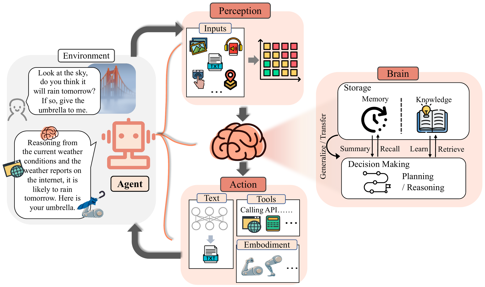</div>
        <figcaption>Xi 等人综述原图（Figure 2）：agent 由 brain、perception、action 三部分组成。brain 负责记忆、思考与决策，perception 处理来自环境的多模态输入，action 调用工具作用于环境。<button class="ref" data-r="rise-and-potential-survey"></button></figcaption>
      </figure>
    </div>
  </div>
  <div class="figure" data-num="tab" id="tab-harness-names">
    <div class="tmap small" id="tmap-harness"></div>
    <figcaption>不同出处对 “模型外面那一层程序” 的叫法与原文含义。</figcaption>
  </div>
  <div class="prose wide">
    <p>这些用法指向同一层：它在模型之外，负责调用模型、执行模型请求的工具、管理上下文和会话。两篇综述描述的是这一层的内部组成；评测论文强调它影响结果、必须披露；厂商文档则把它作为可托管的产品。本综述沿用厂商文档的 “harness” 指代这一层，下文引用各家原文时保留各自的叫法。</p>
  </div>
</section>

<!-- ============ 厂商定义：模型厂商 ============ -->
<section class="page" data-id="defs-labs" data-title="厂商定义：模型厂商">
  <div class="kicker"><span>定义</span><span>模型厂商</span></div>
  <h2>模型厂商对托管 agent 的定义</h2>
  <p class="lede">OpenAI、Anthropic 和 Google 推出了由厂商托管 harness 的 agent 服务，用户提交配置，循环本身在厂商侧运行。本页摘录三家文档中的定义原文与架构图，中文为译文。</p>

  <article class="vdef">
    <div class="vdef-text">
      <header class="vhead"><span class="vlogo" data-logo="openai"></span><div><h3>OpenAI Agents API</h3><span class="vmeta">OpenAI · beta</span></div></header>
      <blockquote lang="en">The Agents API gives your application access to the Codex harness through an OpenAI-managed API. OpenAI manages sessions, orchestration, context compaction, and recovery while your application provides tools and chooses its execution environment.<button class="ref" data-r="openai/agents-api/overview"></button></blockquote>
      <p class="tr">Agents API 通过 OpenAI 托管的 API 向应用提供 Codex harness。OpenAI 负责会话、编排、上下文压缩与恢复，应用提供工具并选择执行环境。</p>
      <p class="tr">架构页把系统分为三部分：OpenAI 托管的 harness；可选的环境（远程沙箱、笔记本电脑、Docker 容器或 AWS Lambda 函数）；用户的应用服务器，负责提交任务、接收事件、执行函数工具。环境类型可以是 <span class="term">none</span>、<span class="term">openai_hosted</span> 或 <span class="term">self_hosted</span>，三种情况的原图分别见<span class="xref" data-x="fig-oai-none"></span>、本页右侧与<span class="xref" data-x="fig-oai-self"></span>。<button class="ref" data-r="openai/agents-api/architecture"></button></p>
      <div class="vterms"><span class="vt-label">文档术语</span><span class="vt">Agent</span><span class="vt">Environment</span><span class="vt">Session</span><span class="vt">Events and items</span></div>
    </div>
    <figure class="figure">
      <div class="frame photo"></div>
      <figcaption>OpenAI 原图：OpenAI 托管沙箱时的 Agents API。应用向 Agents API 发起会话并接收事件；harness 向沙箱发出工具调用并取回结果；虚线框内的 harness 与沙箱由 OpenAI 提供和管理。<button class="ref" data-r="openai/agents-api/overview"></button></figcaption>
    </figure>
  </article>

  <article class="vdef">
    <div class="vdef-text">
      <header class="vhead"><span class="vlogo" data-logo="anthropic"></span><div><h3>Claude Managed Agents</h3><span class="vmeta">Anthropic · beta</span></div></header>
      <blockquote lang="en">Pre-built, configurable agent harness that runs in managed infrastructure.<button class="ref" data-r="anthropic/claude-managed-agents/overview"></button></blockquote>
      <blockquote lang="en">Managed Agents solves these problems by decoupling the brain from the hands. The harness that calls Claude runs separately from the sandbox where code executes, and the session–an append-only log of every model call, tool call, and result–connects the two.<button class="ref" data-r="anthropic/claude-managed-agents/product-blog"></button></blockquote>
      <p class="tr">预置、可配置、运行在托管基础设施上的 agent harness。Managed Agents 把 “大脑” 与 “双手” 分开：调用 Claude 的 harness 与执行代码的沙箱分别运行，二者由会话连接；会话是记录每次模型调用、工具调用与结果的 append-only 日志。</p>
      <p class="tr">文档把服务划分为 Agent（模型、系统提示、工具、MCP 服务器、skills）、Environment（Anthropic 云沙箱或自托管沙箱的配置）、Session（在环境中运行的 agent 实例）与 Events（应用与 agent 之间交换的消息）。<button class="ref" data-r="anthropic/claude-managed-agents/overview"></button></p>
      <div class="vterms"><span class="vt-label">文档术语</span><span class="vt">Agent</span><span class="vt">Environment</span><span class="vt">Session</span><span class="vt">Events</span></div>
    </div>
    <figure class="figure">
      <div class="frame photo dgm-wrap" id="anthropic-dgm"></div>
      <figcaption>依据上方引文绘制，非 Anthropic 原图。原文配图在存档时未能加载。harness 调用 Claude，沙箱执行代码，二者之间的每次模型调用、工具调用与结果追加到会话日志；凭据存放在沙箱之外的 vault 中。<button class="ref" data-r="anthropic/claude-managed-agents/product-blog"></button></figcaption>
    </figure>
  </article>

  <article class="vdef">
    <div class="vdef-text">
      <header class="vhead"><span class="vlogo" data-logo="gemini"></span><div><h3>Managed Agents API on Agent Platform</h3><span class="vmeta">Google · Pre-GA</span></div></header>
      <blockquote lang="en">Managed Agents API on Agent Platform lets you build managed, autonomous agents with a single API call. Powered by the Antigravity harness, each agent runs with a sandbox environment where it reasons, plans, uses agent skills, executes code, searches the web, and reads and writes files.<button class="ref" data-r="google/managed-agents/overview"></button></blockquote>
      <p class="tr">Agent Platform 上的 Managed Agents API 通过一次 API 调用构建托管的自主 agent。agent 由 Antigravity harness 驱动，运行在沙箱环境中，在其中推理、规划、使用 skills、执行代码、搜索网页、读写文件。</p>
      <p class="tr">文档把接口分为两部分：Agents API 是控制面，用于创建 agent 配置、配置执行环境（挂载外部数据源、设置网络白名单）；Interactions API 是数据面，用于在运行时与 agent 交互。<button class="ref" data-r="google/managed-agents/overview"></button></p>
      <div class="vterms"><span class="vt-label">文档术语</span><span class="vt">Agents API（控制面）</span><span class="vt">Interactions API（数据面）</span><span class="vt">sandbox environment</span><span class="vt">env_id</span></div>
    </div>
    <figure class="figure">
      <div class="frame photo"></div>
      <figcaption>Google 原图：上半部分是配置阶段，Agents API 保存可复用的 agent 配置；下半部分是使用阶段，Interactions API 收到请求后取回配置，交给 Harness + Runtime 执行（含工具、skills 与文件系统）。<button class="ref" data-r="google/managed-agents/overview"></button></figcaption>
    </figure>
  </article>
</section>

<!-- ============ 厂商定义：云平台 ============ -->
<section class="page" data-id="defs-cloud" data-title="厂商定义：云平台">
  <div class="kicker"><span>定义</span><span>云平台</span></div>
  <h2>云平台对托管 agent 的定义</h2>
  <p class="lede">AWS、Google 和 Microsoft 的运行平台托管用户自己的 agent 代码，并提供会话隔离、身份、网关、记忆与观测等配套服务。AWS 另与 OpenAI 合作推出托管 harness 的 Bedrock Managed Agents。</p>

  <article class="vdef">
    <div class="vdef-text">
      <header class="vhead"><span class="vlogo" data-logo="aws"></span><div><h3>Bedrock Managed Agents 与 AgentCore Runtime</h3><span class="vmeta">AWS</span></div></header>
      <blockquote lang="en">Developed jointly by AWS and OpenAI, Bedrock Managed Agents combines OpenAI models with the Codex harness and Amazon Bedrock AgentCore.<button class="ref" data-r="aws/bedrock-managed-agents/overview"></button></blockquote>
      <blockquote lang="en">Amazon Bedrock AgentCore Runtime provides a secure, serverless and purpose-built hosting environment for deploying and running AI agents or tools.<button class="ref" data-r="aws/agentcore-runtime/runtime"></button></blockquote>
      <p class="tr">Bedrock Managed Agents 由 AWS 与 OpenAI 联合开发，组合了 OpenAI 模型、Codex harness 与 Amazon Bedrock AgentCore。AgentCore Runtime 是用于部署和运行 AI agent 或工具的托管环境，安全、serverless，专为此用途构建。</p>
      <p class="tr">两者的分工在原图中可以看到：Bedrock Managed Agents 把 harness（Runtime 层）、执行环境（Environment 层）和 OpenAI 模型叠在一起；AgentCore Runtime 只提供运行层，每个会话分配一个 microVM，agent 代码由用户提供。<button class="ref" data-r="aws/agentcore-runtime/deep-research-blog"></button></p>
      <div class="vterms"><span class="vt-label">文档术语</span><span class="vt">Runtime</span><span class="vt">Environment</span><span class="vt">runtimeSessionId</span><span class="vt">microVM / Instances</span></div>
    </div>
    <div class="stack">
      <figure class="figure" id="fig-aws-bma">
        <div class="frame photo"></div>
        <figcaption>AWS 原图：Bedrock Managed Agents 的分层。Runtime 层即 OpenAI harness（Agentic Loop、Inference、Memory、Skills）；Environment 层包括计算、存储、网络、安全与工具，可在云上（AgentCore 等）或本地；下层为 OpenAI 模型；底部为 Bedrock 的治理与观测。<button class="ref" data-r="aws/bedrock-managed-agents/overview"></button></figcaption>
      </figure>
      <figure class="figure">
        <div class="frame photo"></div>
        <figcaption>AWS 原图：在 AgentCore Runtime 上部署 Deep Agents。多个用户的请求经同一入口进入，每个会话分配一个新的 microVM，各自运行一份 agent。<button class="ref" data-r="aws/agentcore-runtime/deep-research-blog"></button></figcaption>
      </figure>
    </div>
  </article>

  <article class="vdef">
    <div class="vdef-text">
      <header class="vhead"><span class="vlogo" data-logo="googlecloud"></span><div><h3>Gemini Enterprise Agent Platform</h3><span class="vmeta">Google · Agent Runtime、Sandboxes、Agent Gateway</span></div></header>
      <blockquote lang="en">Agent Runtime is a fully-managed, opinionated runtime that you can use to deploy, operate, and scale agentic applications.<button class="ref" data-r="google/agent-runtime/overview"></button></blockquote>
      <blockquote lang="en">Sandboxes provide secure, isolated execution environments that are spawned to perform specific tasks on behalf of an agent.<button class="ref" data-r="google/agent-platform-sandbox/overview"></button></blockquote>
      <p class="tr">Agent Runtime 是全托管、预设了做法的运行时，用于部署、运维和扩展 agent 应用。沙箱是代 agent 执行特定任务时启动的安全隔离执行环境。文档明确区分二者：agent 的核心逻辑、决策与编排运行在受信任的 Agent Runtime 中，可能不安全的代码运行在沙箱中。</p>
      <div class="vterms"><span class="vt-label">文档术语</span><span class="vt">Agent Runtime</span><span class="vt">Sandbox</span><span class="vt">Sessions · Memory Bank</span><span class="vt">Agent Gateway</span></div>
    </div>
    <figure class="figure">
      <div class="frame photo"></div>
      <figcaption>Google 原图：Agent Platform 的组成。agent 运行在 Agent Platform Runtime 中（带 Agent Identity）；入站与出站流量都经过 Agent Gateway，由 registry、安全与访问授权组件施加策略；Memory & Sessions、模型与观测是配套服务。<button class="ref" data-r="google/agent-gateway/overview"></button></figcaption>
    </figure>
  </article>

  <article class="vdef">
    <div class="vdef-text">
      <header class="vhead"><span class="vlogo" data-logo="microsoft"></span><div><h3>Foundry Hosted agents</h3><span class="vmeta">Microsoft · preview</span></div></header>
      <blockquote lang="en">Hosted agents are containerized agentic AI applications that run on Agent Service.<button class="ref" data-r="microsoft/foundry-hosted-agents/hosted-agents"></button></blockquote>
      <blockquote lang="en">You own the code that runs inside the sandbox. The platform owns the endpoint, identity, scaling, and session state around it.<button class="ref" data-r="microsoft/foundry-hosted-agents/hosted-agents"></button></blockquote>
      <p class="tr">Hosted agents 是运行在 Agent Service 上的容器化 agent 应用。用户负责沙箱内运行的代码，平台负责其周围的访问入口、身份、扩缩容与会话状态。文档还写明，Hosted agents 调用 Foundry 模型目录中的模型做推理，编排由用户的代码完成。</p>
      <div class="vterms"><span class="vt-label">文档术语</span><span class="vt">agent version</span><span class="vt">session / conversation</span><span class="vt">Responses · Invocations</span><span class="vt">Toolbox</span></div>
    </div>
    <figure class="figure">
      <div class="frame photo"></div>
      <figcaption>Microsoft 原图：Hosted agents 的网络结构。左侧为 Foundry 平台网络（访问入口、micro-VM 宿主层、Tools Service、Data Proxy），右侧为客户 VNet；agent 运行在委派子网中的 micro-VM 内，工具调用经 Tools Service，数据访问经 Data Proxy 和专用终结点进入客户资源。<button class="ref" data-r="microsoft/foundry-hosted-agents/networking"></button></figcaption>
    </figure>
  </article>
</section>

<!-- ============ 学术文献中的定义 ============ -->
<section class="page" data-id="defs-academic" data-title="学术文献中的定义">
  <div class="kicker"><span>定义</span><span>学术文献</span></div>
  <h2>学术文献中的 Agent-as-a-Service</h2>
  <p class="lede">学术论文中已有 “Agent-as-a-Service” 的提法。三篇论文的用法相近：把 agent 当作服务网络中的节点，研究 agent 的注册、发现、调度与协作，或把 agent 部署在数据所在处供远程调用。</p>

  <article class="vdef">
    <div class="vdef-text">
      <header class="vhead"><span class="vlogo vlogo-text">AN</span><div><h3>Agent-as-a-Service based on Agent Network</h3><span class="vmeta">arXiv 2505.08446</span></div></header>
      <blockquote lang="en">We propose Agent-as-a-Service based on Agent Network (AaaS-AN), a service-oriented paradigm grounded in the Role-Goal-Process-Service (RGPS) standard.<button class="ref" data-r="aaas-agent-network"></button></blockquote>
      <p class="tr">AaaS-AN 是基于 RGPS（角色–目标–过程–服务）标准的面向服务的范式。它把 agent 与 agent 组建模为网络中的顶点，按任务与角色依赖自组织；面向服务的 agent 提供服务发现、注册与互操作协议，由服务调度器依据执行图做分布式协调。作者构建了包含 100 多个 agent 服务的系统，并发布 1 万条长链多 agent 工作流数据。</p>
    </div>
    <figure class="figure">
      <div class="frame photo">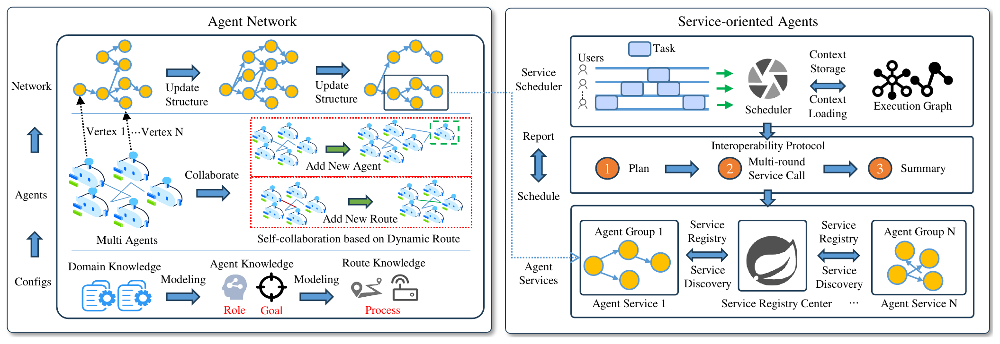</div>
      <figcaption>AaaS-AN 原图（Figure 1）：左侧是 agent 网络，从领域知识、agent 知识与路由知识建模，网络结构随协作更新；右侧是面向服务的 agent，服务调度器按执行图调度任务，agent 组经服务注册中心注册与发现。<button class="ref" data-r="aaas-agent-network"></button></figcaption>
    </figure>
  </article>

  <article class="vdef">
    <div class="vdef-text">
      <header class="vhead"><span class="vlogo vlogo-text">OA</span><div><h3>OpenAaaS</h3><span class="vmeta">arXiv 2605.13618</span></div></header>
      <blockquote lang="en">The concept of Agent-as-a-Service (AaaS)—where autonomous agents are exposed through standardized APIs and discovered dynamically by client systems—has gained significant traction in both industry and academia.<button class="ref" data-r="openaaas"></button></blockquote>
      <blockquote lang="en">AaaS decouples the agent’s cognitive capabilities from the underlying infrastructure, allowing specialized scientific agents to be developed, versioned, and consumed independently.<button class="ref" data-r="openaaas"></button></blockquote>
      <p class="tr">AaaS 指自主 agent 通过标准化 API 对外提供、由客户端系统动态发现；它把 agent 的认知能力与底层基础设施分开，使专门的科学 agent 能够独立开发、版本化和使用。OpenAaaS 面向材料信息学，原则是 “code flows, data stays still”：主 agent 负责规划，子 agent 部署在数据所在的机构执行。</p>
    </div>
    <figure class="figure">
      <div class="frame photo"></div>
      <figcaption>OpenAaaS 原图（Figure 1）：主 agent（Kimi CLI、Codex、Pi-mono 等）经 Server 与 Agent-core 把任务路由到子 agent；子 agent 部署在数据与设备所在处，原始数据不离开所属机构。<button class="ref" data-r="openaaas"></button></figcaption>
    </figure>
  </article>

  <article class="vdef">
    <div class="vdef-text">
      <header class="vhead"><span class="vlogo vlogo-text">ASC</span><div><h3>Agentic Services Computing</h3><span class="vmeta">arXiv 2509.24380</span></div></header>
      <blockquote lang="en">Agent-as-a-Service frameworks organize agents through registration, discovery, interoperability protocols, and execution graphs.<button class="ref" data-r="agentic-services-computing"></button></blockquote>
      <p class="tr">这篇综述从服务计算的角度讨论 agent，把 agentic service 定义为面向服务的自主 agent，并把 AaaS 框架概括为通过注册、发现、互操作协议和执行图组织 agent。它将 agentic service 的内部要素分为服务意图、服务状态与服务控制（见右侧原图）。</p>
    </div>
    <div class="stack">
      <figure class="figure">
        <div class="frame photo">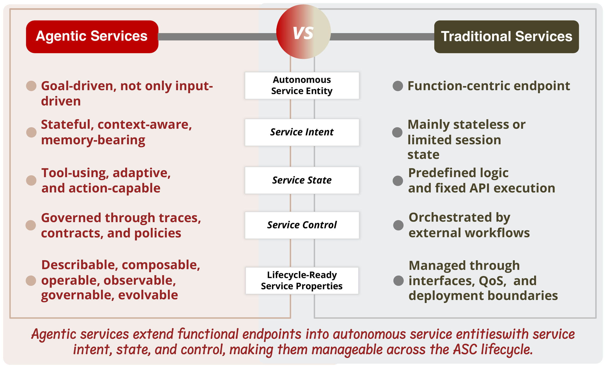</div>
        <figcaption>ASC 原图（Figure 3）：agentic service 与传统服务的对比。前者目标驱动、有状态、使用工具，由轨迹、契约与策略治理；后者以函数为中心，状态有限，执行预定义逻辑。<button class="ref" data-r="agentic-services-computing"></button></figcaption>
      </figure>
      <figure class="figure">
        <div class="frame photo">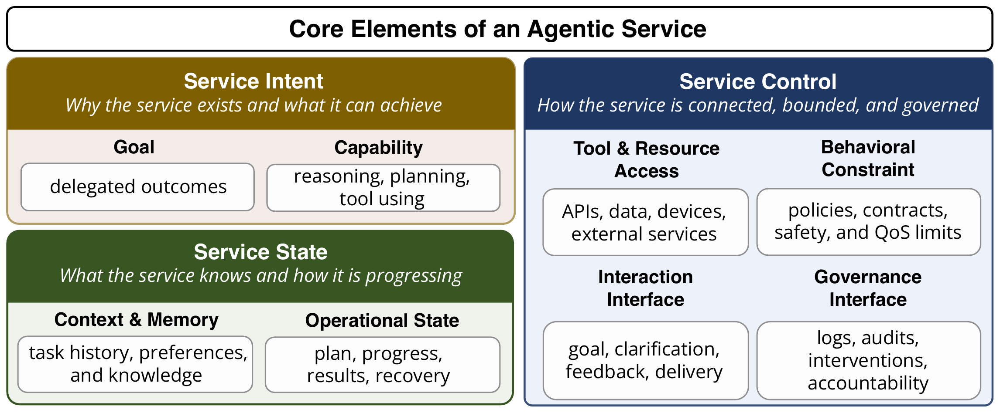</div>
        <figcaption>ASC 原图（Figure 4）：agentic service 的核心要素。服务意图说明委托的目标与能力，服务状态记录上下文、记忆与运行进度，服务控制规定工具与资源访问、行为约束以及交互和治理接口。<button class="ref" data-r="agentic-services-computing"></button></figcaption>
      </figure>
    </div>
  </article>
</section>

<!-- ============ 对照与定义 ============ -->
<section class="page" data-id="terms" data-title="术语对照与本文定义">
  <div class="kicker"><span>定义</span><span>对照与归纳</span></div>
  <h2>术语对照与本文的定义</h2>
  <p class="lede">前三页摘录的定义里，各家给同类部件起了不同的名字。<span class="xref" data-x="fig-terms"></span>把这些名字按部件的职责对齐，本页再据此给出本综述使用的定义。</p>
  <div class="figure" data-num="tab" id="fig-terms">
    <div class="tmap" id="tmap"></div>
    <figcaption>各厂商文档中对应部件的名称，保留原文术语。“—” 表示该厂商文档中没有单独描述此部件。</figcaption>
  </div>
  <div class="cols even">
    <div class="prose">
      <h3>对照表显示的共同点</h3>
      <ul>
        <li><strong>每一家都有 harness 这一层</strong>，区别在于由谁提供。OpenAI、Anthropic、Google Managed Agents 与 Bedrock Managed Agents 由厂商托管；AgentCore Runtime、Google Agent Runtime 与 Foundry Hosted agents 运行用户自带的代码。</li>
        <li><strong>每一家都以会话作为调用单位。</strong>OpenAI 与 Anthropic 用 Session 与 Events；AgentCore 用 runtimeSessionId；Foundry 用 session ID 与 conversation ID；Google Managed Agents 用 Interactions API。</li>
        <li><strong>执行环境都与 harness 分开描述。</strong>OpenAI、Anthropic 的 Environment 可以是厂商沙箱或用户机器；AWS 原图把 Environment 单列为一层；Google 文档明确区分 Agent Runtime 与 Sandbox；Microsoft 原图中 agent 运行在 micro-VM 中，工具调用经单独的 Tools Service。</li>
        <li><strong>模型推理与工具调用是 harness 之外的依赖。</strong>模型在 AWS 原图中单列为一层，Google 原图中是 “Models (Gemini/3rd party)”；搜索、MCP、代码执行等工具在各家文档中以内置工具或网关的形式出现。</li>
        <li>配置、凭据、记忆与观测在多数文档中有对应部件，是服务内部保存的状态。</li>
      </ul>
    </div>
    <div class="prose">
      <h3>与学术定义的关系</h3>
      <p>学术文献中的 AaaS 关注 agent 之间：OpenAaaS 强调 agent “exposed through standardized APIs and discovered dynamically by client systems”，AaaS-AN 与 ASC 强调注册、发现、调度与协作。厂商文档关注单个 agent 所依赖的资源：harness 在哪里运行、沙箱由谁提供、模型与工具如何接入、会话状态如何保存与计费。两者都把 agent 当作通过 API 调用的服务。</p>
      <h3>本综述的定义</h3>
      <div class="defbox">
        <p><strong>Agent as a Service（托管智能体服务）</strong>：以 agent 会话为调用单位的云服务。服务方运行 agent harness，或运行承载用户 harness 的运行时并保存会话状态；应用通过会话接口提交任务、接收事件；harness 在执行中调用模型推理，在执行环境中运行命令与读写文件，并调用托管工具。</p>
      </div>
      <p>这一定义沿用学术文献 “通过 API 对外提供 agent” 的含义，范围限定在单个 agent 的云端运行；它同时覆盖厂商托管 harness 的服务与运行用户 harness 的平台。<span class="xref" data-x="fig-model"></span>按这一定义画出服务的组成。</p>
    </div>
  </div>
</section>

<!-- ============ 服务结构 ============ -->
<section class="page" data-id="model" data-title="服务结构">
  <div class="kicker"><span>定义</span><span>结构</span></div>
  <h2>托管智能体服务的结构</h2>
  <div class="figure" id="fig-model">
    <div class="frame photo dgm-wrap" id="model-dgm" data-center></div>
    <figcaption>托管智能体服务的结构，依据<span class="xref" data-x="fig-terms"></span>的对齐结果绘制。虚线框内是服务方运行的部分：harness 及其保存的配置、会话日志、凭据与记忆。编号 ①–④ 是服务与外部之间的接口：① 应用经会话接口提交任务、接收事件；② harness 调用模型推理；③ harness 在执行环境中执行工具调用；④ harness 或服务方调用搜索、MCP 等托管工具。框外列出各接口上的产品示例。</figcaption>
  </div>
  <div class="cols even">
    <div class="prose">
      <h3>各部分对应的原文</h3>
      <ul>
        <li><strong>Harness</strong>：OpenAI 定义为 “runs the model and tool loop and maintains the agent’s session”；图中列出的子功能取自 OpenAI 的能力列表（上下文压缩、子 agent、会话恢复）与 AWS 原图的 Runtime 层（Agentic Loop、Memory、Skills）。<button class="ref" data-r="openai/agents-api/architecture"></button><button class="ref" data-r="openai/agents-api/overview"></button><button class="ref" data-r="aws/bedrock-managed-agents/overview"></button></li>
        <li><strong>会话接口</strong>：OpenAI 与 Anthropic 的 Session、Events；Foundry 的 Responses 与 Invocations 协议。<button class="ref" data-r="anthropic/claude-managed-agents/overview"></button><button class="ref" data-r="microsoft/foundry-hosted-agents/hosted-agents"></button></li>
        <li><strong>执行环境</strong>：OpenAI 定义为 “Where the agent runs commands, executes code, and works with files”。<button class="ref" data-r="openai/agents-api/architecture"></button></li>
        <li><strong>服务内的状态</strong>：Anthropic 的会话日志与 vault；Google 的 Sessions 与 Memory Bank；AWS 的 Memory、Identity、Observability。<button class="ref" data-r="anthropic/claude-managed-agents/product-blog"></button><button class="ref" data-r="google/agent-platform/sessions"></button><button class="ref" data-r="aws/agentcore-runtime/runtime"></button></li>
      </ul>
    </div>
    <div class="prose">
      <h3>图中的取舍</h3>
      <p>托管工具单列为接口 ④，是因为各家把搜索、代码解释器、浏览器、MCP 网关作为单独计费的服务端组件提供（<a class="pref" data-p="tools"></a>）；它们也可以看作执行环境之外的另一类工具调用。身份与网关（AgentCore Identity、Google Agent Gateway）在图中归入服务内部状态与接口 ④，未单独画出。</p>
      <p>各厂商产品在这一结构上的覆盖范围不同，逐项对照见<span class="xref" data-x="tab-landscape"></span>；harness 与执行环境的三种部署关系见<a class="pref" data-p="evolution"></a>。</p>
    </div>
  </div>
</section>

<!-- ============ 部署形态 ============ -->
<section class="page" data-id="evolution" data-title="Harness 的部署形态">
  <div class="kicker"><span>背景</span><span>部署形态</span></div>
  <h2>Harness 与执行环境的三种部署关系</h2>
  <p class="lede">Anthropic 介绍 Managed Agents 的文章按时间顺序描述了 harness 的三种部署方式，并说明了从第二种走向第三种的原因。OpenAI 的架构页用三张原图给出了同样的选择：不配环境、OpenAI 托管环境、用户自带环境。</p>
  <div class="stack">
    <div class="prose wide">
      <h3>Anthropic 描述的三个阶段</h3>
      <ol>
        <li><strong>模型 API。</strong>“When we opened up Claude to developers in 2023, the API was deliberately simple: tokens in, tokens out … you built the harness and underlying infrastructure.” 开发者自己写循环：“ask the model what to do, run the tool, feed the result back, and repeat.”</li>
        <li><strong>Agent SDK。</strong>Claude Code 内部的 harness 以 Claude Agent SDK 开放，开发者在自己的基础设施上部署。文章指出这种部署的共同做法是 “agent harnesses often run inside the same container as the filesystem it works on”。</li>
        <li><strong>Managed Agents。</strong>“decoupling the brain from the hands”：harness 与沙箱分开运行，由会话日志连接。</li>
      </ol>
      <p>对于第二种形态，文章列出三个问题：容器要先启动，模型才能开始推理（“A container has to spin up … before Claude can think”）；模型生成的代码与凭据在同一个容器里；容器退出时，整个运行随之丢失。第三种形态对应的做法是：环境与推理并行准备，从不调用工具的会话不创建容器，文章称测试中首 token 时间的中位数缩短约 60%，p95 缩短 90% 以上；MCP、CLI、GitHub 的令牌存放在单独的 vault 中，由代理按需取出；会话日志存放在运行 agent 的进程之外，会话空闲时容器打检查点，之后可从原处恢复。<button class="ref" data-r="anthropic/claude-managed-agents/product-blog"></button></p>
      <p>Crab 论文用 agent-in-a-sandbox 与 agent-with-a-sandbox 区分第二、第三种形态：前者 “the agent process itself runs inside the sandbox”，后者 agent 在沙箱之外，通过接口操作沙箱。<button class="ref" data-r="crab"></button></p>
    </div>
    <div class="figure">
      <div class="frame photo dgm-wrap" id="evo-dgm"></div>
      <figcaption>依据上文 Anthropic 文章的描述与 Crab 的术语绘制，非原图。① 循环在开发者应用中，直接调用模型 API；② harness 与它操作的文件、进程、凭据处于同一容器；③ harness 由厂商托管，沙箱可在厂商或用户的机器上，二者经会话日志衔接，凭据经 vault 与代理注入。<button class="ref" data-r="anthropic/claude-managed-agents/product-blog"></button><button class="ref" data-r="crab"></button></figcaption>
    </div>
  </div>
  <div class="cols even">
    <figure class="figure" id="fig-oai-none">
      <div class="frame photo">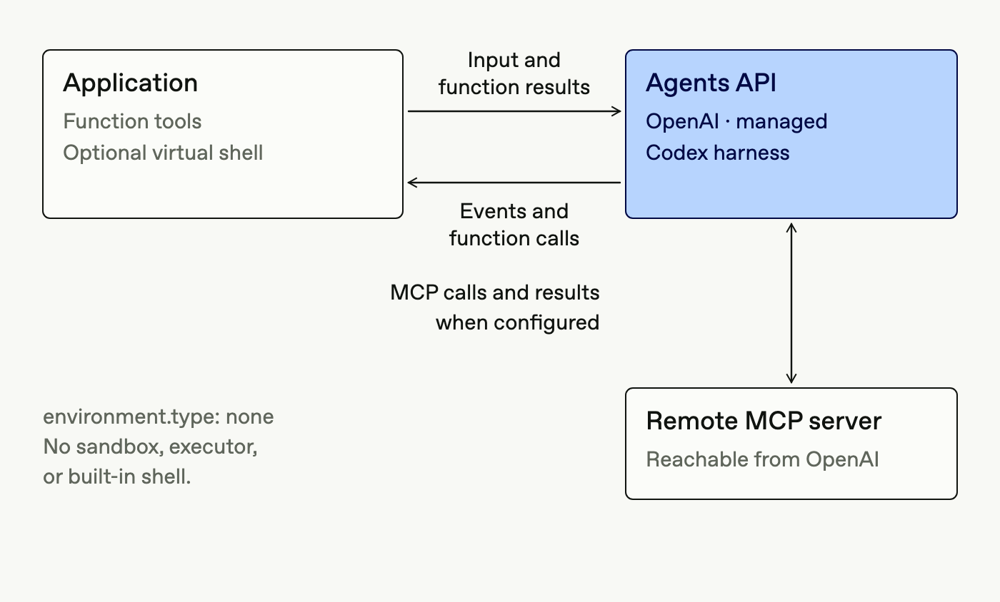</div>
      <figcaption>OpenAI 原图：<span class="term">environment.type: none</span>。没有沙箱和内置 shell；harness 直接调用可从 OpenAI 访问的远程 MCP 服务器，函数工具由应用执行并回传结果。<button class="ref" data-r="openai/agents-api/architecture"></button></figcaption>
    </figure>
    <figure class="figure" id="fig-oai-self">
      <div class="frame photo"></div>
      <figcaption>OpenAI 原图：带沙箱的 Agents API。沙箱可以由 OpenAI 提供，也可以由用户的提供方运行；自托管时（虚线）应用负责沙箱的启动、重连与停止。<button class="ref" data-r="openai/agents-api/architecture"></button></figcaption>
    </figure>
  </div>
</section>

<!-- ============ 托管范围 ============ -->
<section class="page" data-id="landscape" data-title="各厂商的托管范围">
  <div class="kicker"><span>现状</span><span>覆盖范围</span></div>
  <h2>各厂商的托管范围</h2>
  <p class="lede">按<span class="xref" data-x="fig-model"></span>的结构，逐个产品标出 harness 与各接口由谁运行。产品分为五组：托管 harness 的服务、运行平台、沙箱服务、搜索 API、面向开发者的云端编程应用。<span class="xref" data-x="fig-donuts"></span>统计了这 18 个产品的分布。</p>
  <div class="figure" id="fig-donuts">
    <div class="chart-title">表中 18 个产品的分布</div>
    <div class="donuts" id="donuts"></div>
    <figcaption>由<span class="xref" data-x="tab-landscape"></span>统计。“两者可选” 指产品允许在服务方的环境与用户自己的计算资源之间选择；搜索 API 不涉及 harness 与执行环境。</figcaption>
  </div>
  <div class="figure" data-num="tab" id="tab-landscape">
    <div class="matrix-tools" role="group" aria-label="按类别筛选">
      <button data-f="all" aria-pressed="true">全部</button>
      <button data-f="managed" aria-pressed="false">托管 harness 的服务</button>
      <button data-f="runtime" aria-pressed="false">运行平台</button>
      <button data-f="sandbox" aria-pressed="false">沙箱服务</button>
      <button data-f="tool" aria-pressed="false">搜索 API</button>
      <button data-f="app" aria-pressed="false">云端编程应用</button>
    </div>
    <div class="matrix" id="matrix"></div>
    <figcaption>各产品的 harness 与各接口由谁运行。底色表示运行方：<span class="sw sw-h"></span>服务方运行，<span class="sw sw-b"></span>用户提供，<span class="sw sw-o"></span>两者可选（单元格内列出各选项）；空白单元格表示该产品不涉及此部分。单元格内容摘自官方页面，产品名后的上标数字对应参考文献。</figcaption>
  </div>
  <div class="cols even">
    <div class="prose">
      <h3>分组之间的差别</h3>
      <p>托管 harness 的服务在 harness、会话与模型三列都由厂商运行，差别在执行环境：OpenAI、Anthropic 与 Bedrock Managed Agents 允许把沙箱换成用户自己的计算资源，Google Managed Agents 目前只提供托管沙箱。运行平台在 harness 一列都是用户自带，模型也由 agent 代码自行选择（Foundry 限定在其模型目录内），平台运行的是会话、隔离环境与配套服务。</p>
    </div>
    <div class="prose">
      <h3>云端编程应用</h3>
      <p>Codex Cloud、Claude Code 云会话、Copilot cloud agent、Jules 与 Kiro Web 是面向开发者的成品应用，五个部分都由厂商运行；Claude Code 云会话还可路由到组织自托管的环境。这一组与托管 harness 的服务使用相同的部件，区别是调用方式：前者经网页、IDE、CLI 或 GitHub 使用，后者经 API 集成进用户自己的应用。</p>
    </div>
  </div>
</section>

<!-- ============ Harness ============ -->
<section class="page" data-id="harness" data-title="Agent Harness">
  <div class="kicker"><span>部件</span><span>harness</span></div>
  <h2>Agent harness</h2>
  <div class="cols">
    <div class="prose">
      <h3>厂商托管的 harness 提供什么</h3>
      <p>OpenAI 列出的托管 harness 能力有：沙箱内的命令与代码执行，skills 与指令，经工具或 MCP 接入的外部数据，运行中的用户引导（steering），总结早先工作以管理上下文窗口，把子任务委派给子 agent，从中断处恢复会话。多 agent 配置中可以设置并发子 agent 数（示例为 4）。<button class="ref" data-r="openai/agents-api/overview"></button> Anthropic 列出内置的 prompt caching 与 compaction，以及 Bash、文件读写编辑与搜索、网页搜索与抓取、MCP 等内置工具；另有让 agent 按评分细则检查自身输出的 outcomes、多 agent 编排、权限策略与 webhook。<button class="ref" data-r="anthropic/claude-managed-agents/overview"></button><button class="ref" data-r="anthropic/claude-managed-agents/product-blog"></button> Google 的托管沙箱默认提供 bash 与 file_system 两个工具，可从 Skill Registry 挂载 skills。<button class="ref" data-r="google/managed-agents/sandbox-environment"></button></p>
      <h3>运行平台上的 harness</h3>
      <p>运行平台的 harness 由用户提供。AgentCore Runtime 支持 LangGraph、Strands、CrewAI 与不使用框架的自定义 agent，平台页面还列出 OpenAI Agents SDK 与 Claude Agent SDK。<button class="ref" data-r="aws/agentcore-runtime/runtime"></button><button class="ref" data-r="aws/agentcore/overview"></button> Google Agent Runtime 按集成程度给框架分档：ADK 完全集成；LangChain、LangGraph、AG2、LlamaIndex 有 SDK 模板；CrewAI 等使用自定义模板，也可直接部署满足运行时契约的任意容器。<button class="ref" data-r="google/agent-runtime/overview"></button> Microsoft 要求容器监听 8088 端口、提供 <span class="term">GET /readiness</span> 健康检查、实现 <span class="term">/responses</span> 或 <span class="term">/invocations</span> 至少一个协议路由，并在 SIGTERM 时优雅退出。<button class="ref" data-r="microsoft/foundry-hosted-agents/runtime-contract"></button></p>
      <h3>为什么要由厂商托管</h3>
      <p>Anthropic 的解释是 harness 需要随模型调整。文中的例子：Claude Sonnet 4.5 在接近上下文上限时会提前收尾（文中称为 “context anxiety”），团队为此在 harness 中加入上下文重置；到 Claude Opus 4.5，这一行为消失，重置成为多余的开销。文章认为，对多数组织而言维护 harness 是 “overhead that doesn’t differentiate their product”。<button class="ref" data-r="anthropic/claude-managed-agents/product-blog"></button></p>
    </div>
    <div class="stack">
      <figure class="figure">
        <div class="frame photo">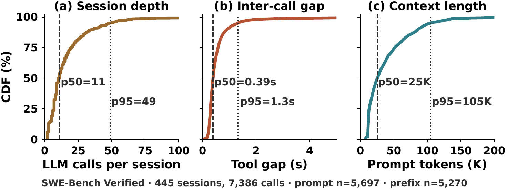</div>
        <figcaption>Talaria 原图（Figure 2）：445 个 SWE-bench Verified 会话、7,386 次模型调用。(a) 每个会话的模型调用次数，中位数 11、p95 49；(b) 两次调用之间的工具间隔，中位数 0.39 秒、p95 1.3 秒；(c) 提示长度，中位数 25K、p95 105K tokens。超过 96.8% 的续接请求与前一次调用共享一半以上的前缀。<button class="ref" data-r="talaria"></button></figcaption>
      </figure>
      <figure class="figure">
        <div class="frame photo">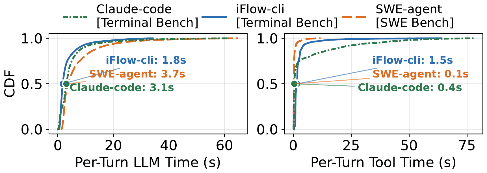</div>
        <figcaption>Crab 原图：三种 harness 每一轮中 LLM 用时（左）与工具用时（右）的分布。LLM 用时中位数 1.8–3.7 秒，工具用时中位数 0.1–1.5 秒；三者中 LLM 用时都高于工具用时。<button class="ref" data-r="crab"></button></figcaption>
      </figure>
    </div>
  </div>
  <div class="section-label">已有工作</div>
  <div class="works">
    <div class="work"><h4>SWE-agent</h4><div class="where">arXiv 2405.15793</div><p>为模型设计 agent–计算机接口（ACI），包括带行号的文件查看、编辑、目录搜索命令，在 SWE-bench 上 pass@1 为 12.5%，HumanEvalFix 为 87.7%。论文比较了不同接口设计对 agent 行为的影响。<button class="ref" data-r="swe-agent"></button></p></div>
    <div class="work"><h4>AgentDiet</h4><div class="where">arXiv 2509.23586</div><p>分析编程 agent 轨迹，发现其中广泛存在无用、重复与过期的信息；在运行时删除这些内容后，输入 token 减少 39.9%–59.7%，总计算成本减少 21.1%–35.9%，任务表现不变。<button class="ref" data-r="trajectory-reduction"></button></p></div>
    <div class="work"><h4>BudgetMLAgent</h4><div class="where">arXiv 2411.07464</div><p>以免费模型为主、按需调用 GPT-4 做规划的多 agent 系统。在 MLAgentBench 上，每次运行平均成本由 $0.931 降至 $0.054，平均成功率由 22.72% 升至 32.95%。<button class="ref" data-r="budgetmlagent"></button></p></div>
    <div class="work"><h4>Murakkab</h4><div class="where">OSDI 2026</div><p>把工作流声明与模型、硬件选择分开，由画像驱动的优化器按 SLO 选择配置；与已有系统相比，GPU 用量最多减少 2.8 倍，能耗 3.7 倍，成本 4.3 倍。<button class="ref" data-r="murakkab"></button></p></div>
    <div class="work"><h4>Everything is Context</h4><div class="where">arXiv 2512.05470</div><p>把记忆、工具、人工输入等上下文挂载为文件系统对象，在 AIGNE 框架中实现上下文的构造、加载与评估流水线。<button class="ref" data-r="everything-is-context"></button></p></div>
    <div class="work"><h4>FS-Researcher</h4><div class="where">arXiv 2602.01566</div><p>Context Builder agent 把笔记与原始资料写入层级知识库，Report Writer agent 以知识库为事实来源逐节写报告；报告质量与分配给 Context Builder 的计算量正相关。<button class="ref" data-r="fs-researcher"></button></p></div>
    <div class="work"><h4>Filesystem-Based Memory</h4><div class="where">arXiv 2607.26637</div><p>研究 agent 以 markdown 文件目录作为长期记忆：整理过的记忆库在材料较多时把检索成本降低约一半；替换工具集对记忆库形态的影响与替换模型相当。<button class="ref" data-r="filesystem-memory"></button></p></div>
    <div class="work"><h4>ChronoMem</h4><div class="where">arXiv 2607.27773</div><p>为 agent 长期记忆做版本控制：每次写入时提交快照，支持用自然语言请求回滚到历史版本，集成于 Google ADK。<button class="ref" data-r="chronomem"></button></p></div>
  </div>
  <div class="figure">
    <div class="chart-title">轨迹裁剪与模型级联对成本的影响</div>
    <div id="ch-harness"></div>
    <figcaption>各论文报告的降幅。AgentDiet 为两种模型、两个基准上的范围；Murakkab 报告的是倍数，按 1 − 1/倍数 换算为降幅。各项指标不同，用于看量级，不宜横向比较。<button class="ref" data-r="trajectory-reduction"></button><button class="ref" data-r="budgetmlagent"></button><button class="ref" data-r="murakkab"></button></figcaption>
  </div>
</section>

<!-- ============ 会话 ============ -->
<section class="page" data-id="session" data-title="会话接口">
  <div class="kicker"><span class="dot" style="background:var(--c-session)"></span><span>接口 ①</span><span>会话</span></div>
  <h2>会话接口与会话生命周期</h2>
  <p class="lede">托管服务以会话为调用单位。会话的存续时间可以远长于它占用计算资源的时间：五家文档都把 “会话存在” 与 “会话正在占用沙箱” 分开处理，但具体机制不同。本页先分别说明各家的做法，最后汇总。</p>

  <div class="vendor-row">
    <div class="prose">
      <h3><span class="vlogo sm" data-logo="openai"></span>OpenAI：环境可以晚于会话启动</h3>
      <p>会话流程：创建会话时服务准备环境；用户输入开启一轮工作；应用通过流式事件或 webhook 获取进展；之后可继续发送任务，或在运行中途发送引导消息。<button class="ref" data-r="openai/agents-api/overview"></button> 文档写明 “An agent session can outlive its environment”。自托管环境有两种管理方式（下方两张原图）：应用在创建会话后自行启动计算资源；或者等到服务发出 <span class="term">agent.session.action_required</span>（类型为 <span class="term">environment_connection</span>）事件时，由 webhook 处理程序启动或重连执行器。服务最多等待 5 分钟连接，超时则本次提交失败；空闲事件本身不能作为安全的关机信号。<button class="ref" data-r="openai/agents-api/sandbox-lifecycle"></button> OpenAI 托管沙箱在活动与心跳中断一小时后可能被删除，<span class="term">/workspace/outputs</span> 下的文件在每轮结束时发布为不可变制品。<button class="ref" data-r="openai/agents-api/hosted-sandbox"></button></p>
    </div>
    <div class="cols even">
      <figure class="figure">
        <div class="frame photo">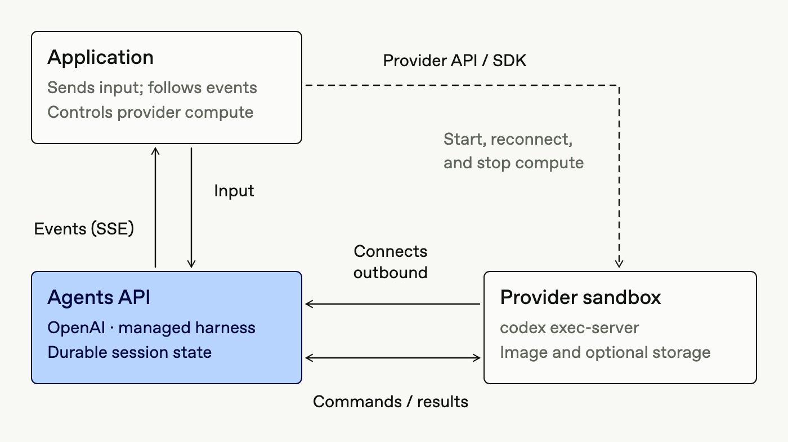</div>
        <figcaption>OpenAI 原图：应用管理的沙箱。应用向 Agents API 发送输入并接收 SSE 事件，同时经提供方的 API 启动、重连与停止沙箱；沙箱中的执行器主动向外连接 Agents API。<button class="ref" data-r="openai/agents-api/sandbox-lifecycle"></button></figcaption>
      </figure>
      <figure class="figure">
        <div class="frame photo"></div>
        <figcaption>OpenAI 原图：webhook 管理的沙箱。Agents API 需要执行器时向 webhook 控制器发送连接请求，控制器验证签名、排队、确认当前需求后启动或重连沙箱（虚线表示对计算资源的控制）。<button class="ref" data-r="openai/agents-api/sandbox-lifecycle"></button></figcaption>
      </figure>
    </div>
  </div>

  <div class="cols even">
    <div class="prose">
      <h3><span class="vlogo sm" data-logo="anthropic"></span>Anthropic：按 running 状态计时</h3>
      <p>会话状态包括 running、idle、rescheduling、terminated。价格页写明：“Runtime is measured to the millisecond and accrues only while the session’s status is running. Time spent idle (waiting for your next message or a tool confirmation), rescheduling, or terminated does not count toward runtime.”<button class="ref" data-r="anthropic/claude-api/pricing"></button> 会话空闲时容器打检查点，之后从原处恢复。<button class="ref" data-r="anthropic/claude-managed-agents/product-blog"></button> 自托管时环境是一个工作队列，会话排队等待 worker 领取；没有 worker 在线时会话保持排队。<button class="ref" data-r="anthropic/claude-managed-agents/self-hosted-sandboxes"></button></p>
      <h3><span class="vlogo sm" data-logo="microsoft"></span>Microsoft：计算跟随会话</h3>
      <p>文档用三个状态描述会话：<strong>Active</strong>，计算在运行，请求路由到这里，<span class="term">$HOME</span> 与 <span class="term">/files</span> 可用；<strong>Idle</strong>，在设定的空闲超时内没有请求，平台释放计算并持久化会话状态；<strong>Resumed</strong>，同一会话 ID 再次被访问，平台分配新的计算并恢复持久化的状态。空闲超时可设为 2–60 分钟，默认 15 分钟；会话 30 天未活动后被删除。文档的说法是 “Compute follows the session, not the individual request”。<button class="ref" data-r="microsoft/foundry-hosted-agents/hosted-agents"></button></p>
    </div>
    <div class="prose">
      <h3><span class="vlogo sm" data-logo="aws"></span>AWS：microVM 与持久存储分开</h3>
      <p>AgentCore Runtime 的会话在 microVM 上最长运行 8 小时，在 Instances 计算类型上最长 14 天。<button class="ref" data-r="aws/agentcore-runtime/runtime"></button> 会话停止或空闲超时后 microVM 终止；配置了托管会话存储时，挂载在 <span class="term">/mnt</span> 下的目录在下次以同一 <span class="term">runtime-session-id</span> 调用时被新的 microVM 重新挂载，空闲 14 天后清理，每会话上限 1 GB。<button class="ref" data-r="aws/agentcore-runtime/persistent-filesystem"></button> Instances 类型在停止时终止 EC2 实例、保留 EBS 卷，恢复时在新实例上重新挂载。<button class="ref" data-r="aws/agentcore-runtime/instances"></button></p>
      <h3><span class="vlogo sm" data-logo="googlecloud"></span>Google：沙箱 TTL</h3>
      <p>Managed Agents 的沙箱 TTL 为 7 天，每次交互重新计时；运行时安装的包保存在环境快照中，使用相同 <span class="term">env_id</span> 的交互可以继续使用。<button class="ref" data-r="google/managed-agents/sandbox-environment"></button> Agent Platform 的沙箱 TTL 从自定义容器的 7 天到代码执行沙箱的 14 天不等。<button class="ref" data-r="google/agent-platform-sandbox/overview"></button></p>
    </div>
  </div>

  <div class="cols wide-left">
    <div class="figure">
      <div class="frame photo dgm-wrap" id="life-dgm"></div>
      <figcaption>汇总以上五家的会话生命周期，非任何一家的原图。状态名取自各家文档：准备环境（OpenAI 的 pending）、运行（Anthropic 的 running、Microsoft 的 Active）、等待外部动作（OpenAI 的 action_required）、空闲（Anthropic 的 idle、Microsoft 的 Idle）、删除。实线框为占用计算资源的状态，虚线框为可以释放计算、只保留会话日志与持久化文件的状态；状态旁的小字是各家的具体规则。</figcaption>
    </div>
    <div class="figure">
      <div class="chart-title">各产品的时间上限（对数坐标）</div>
      <div class="legend" id="lg-limits"></div>
      <div id="ch-limits"></div>
      <figcaption>三类数值含义不同：运行时长上限（会话一次最多运行多久）、空闲回收时间（无活动多久后释放计算）、状态保留期限（无活动多久后删除会话或文件）。数据取自 GitHub、OpenAI、E2B、AWS、Google、Microsoft 的官方页面。<button class="ref" data-r="github/copilot-cloud-agent/overview"></button><button class="ref" data-r="e2b/sandbox/pricing"></button></figcaption>
    </div>
  </div>

  <div class="section-label">已有工作</div>
  <div class="works">
    <div class="work"><h4>τ-bench</h4><div class="where">arXiv 2406.12045</div><p>用模型模拟用户与 agent 多轮对话，以对话结束时的数据库状态判分，并提出 pass^k 衡量同一任务多次运行的一致性。gpt-4o 的成功率低于 50%，零售领域 pass^8 低于 25%。<button class="ref" data-r="tau-bench"></button></p></div>
    <div class="work"><h4>人机协作综述</h4><div class="where">arXiv 2505.00753</div><p>整理 LLM 人机协作系统中人提供的信息、反馈与控制，以及交互类型、编排与通信方式。<button class="ref" data-r="human-agent-collaboration-survey"></button></p></div>
    <div class="work"><h4>OVON 互操作框架</h4><div class="where">arXiv 2407.19438</div><p>Linux Foundation 的 Open Voice Network 提出基于自然语言的通用 API 与发现规范，用于不同对话 agent 之间的互相调用。<button class="ref" data-r="conversational-interoperability"></button></p></div>
  </div>
</section>

<!-- ============ 模型推理 ============ -->
<section class="page" data-id="inference" data-title="模型推理">
  <div class="kicker"><span class="dot" style="background:var(--c-model)"></span><span>接口 ②</span><span>模型推理</span></div>
  <h2>模型推理</h2>
  <p class="lede">托管服务在一次会话中多次调用模型。Talaria 统计的 SWE-bench 会话，模型调用次数的中位数为 11，相邻两次调用之间的工具执行中位数为 0.39 秒，后一次提示的大部分内容是前一次的前缀（<a class="pref" data-p="harness"></a>）。推理侧的研究据此关注会话级的路由、准入与 KV cache 复用。</p>
  <div class="cols">
    <div class="prose">
      <h3>各产品如何接入模型</h3>
      <p>托管 harness 的服务使用厂商自己的模型：OpenAI Agents API 使用 OpenAI 模型，按所选模型的 API 价计费；Claude Managed Agents 使用 Claude 模型，token 按模型价目表计费，prompt caching 的倍率同样适用。<button class="ref" data-r="openai/agents-api/overview"></button><button class="ref" data-r="anthropic/claude-api/pricing"></button> Bedrock Managed Agents 在 Bedrock 内运行 OpenAI 的 harness，模型推理也经由 Amazon Bedrock。<button class="ref" data-r="openai/agents-api/bedrock-managed-agents"></button></p>
      <p>运行平台把模型的选择交给 agent 代码。AgentCore Runtime 的文档列出 Bedrock、Claude、Gemini、OpenAI 等模型；Google Agent Runtime 原图中的模型一栏为 “Models (Gemini/3rd party)”；Microsoft Hosted agents 调用 Foundry 模型目录中的模型。<button class="ref" data-r="aws/agentcore-runtime/runtime"></button><button class="ref" data-r="google/agent-gateway/overview"></button><button class="ref" data-r="microsoft/foundry-hosted-agents/hosted-agents"></button></p>
      <h3>价格与前缀缓存</h3>
      <p>agent 会话的提示逐轮增长且高度重复，缓存命中的比例直接影响费用。Anthropic 价目表中，缓存读取按标准输入价的 10% 计费，Fable 5.1 为 2.5%，Opus 5.5 与 Sonnet 5.5 为 5%（<span class="xref" data-x="fig-price"></span>）。<button class="ref" data-r="anthropic/claude-api/pricing"></button> 价格页给出的一小时编程会话算例中，4 万个输入 token 命中缓存后，输入部分的费用由 $0.25 降至 $0.07（<a class="pref" data-p="cost"></a>）。</p>
      <h3>按调用调度的问题</h3>
      <p>Talaria 指出，按单次调用调度的 serverless 多模型推理系统会在两个方向上与会话完成时间错位。空间上，只看负载或队列长度的路由器可能把会话的后续调用发到最空闲的实例，而该实例既没有目标模型的权重，也没有会话的 KV；对长上下文会话，搬运 KV 或重算前缀的开销可能超过它避开的排队时间。时间上，按固定轮次在多个模型间轮转的调度器即使路由正确，也可能让返回的会话等到该模型的下一个时间片。<button class="ref" data-r="talaria"></button> 论文给出的量级：在 Qwen3-235B、TP=8 上重算 25K tokens 的中位前缀需要 4.3 秒 TTFT，而工具间隔的中位数为 0.39 秒。</p>
      <p>Talaria 的做法见<span class="xref" data-x="fig-talaria-arch"></span>：热池实例常驻单个模型，冷池实例以 token 级时分复用若干长尾模型；会话感知的路由器为可能返回的调用预留下一个时间片的准入额度（soft reservation），没有预留的调用按模型驻留、KV 驻留和实例压力排序选择实例。</p>
    </div>
    <div class="stack">
      <figure class="figure" id="fig-talaria-arch">
        <div class="frame photo"></div>
        <figcaption>Talaria 原图（Figure 1）：系统结构。集群层的 Router 在热池与冷池之间保持会话的回访亲和性；冷池实例通过会话预留（SP）接纳在时间片中途返回的调用，并在模型切换时保留可恢复的 KV；底层的多模型内存层负责 HBM 分配、主机 KV 恢复（HKVR）与设备间（D2D）预取。<button class="ref" data-r="talaria"></button></figcaption>
      </figure>
      <figure class="figure">
        <div class="frame photo"></div>
        <figcaption>Talaria 原图：单台 TP=8 服务器回放 30 个 SWE-bench 会话（960 次调用，三个总参数量超过千亿的模型）的会话完成时间分布。Round-only 关闭了会话预留、主机 KV 恢复与 D2D 预取；与之相比，Talaria 把中位完成时间由 1000 秒降至 189 秒，p95 由 2296 秒降至 867 秒。no-HKVR、no-SP、H2D-only 为分别去掉一项机制的消融。<button class="ref" data-r="talaria"></button></figcaption>
      </figure>
      <div class="figure" id="fig-price">
        <div class="chart-title">Claude 模型价格（美元 / 百万 token）</div>
        <div class="legend" id="lg-price"></div>
        <div id="ch-price"></div>
        <figcaption>Haiku 5.5 为 10 万 token 以内提示的价格。缓存读取价格远低于输入价，会话越长、前缀复用越多，差别越明显。<button class="ref" data-r="anthropic/claude-api/pricing"></button></figcaption>
      </div>
    </div>
  </div>
  <div class="section-label">已有工作</div>
  <div class="works">
    <div class="work"><h4>vLLM / PagedAttention</h4><div class="where">SOSP 2023 · arXiv 2309.06180</div><p>以操作系统分页的方式管理 KV cache，碎片接近于零，KV 可在请求内和请求间共享；相同延迟下吞吐为 FasterTransformer、Orca 的 2–4 倍。<button class="ref" data-r="vllm"></button></p></div>
    <div class="work"><h4>SGLang</h4><div class="where">arXiv 2312.07104</div><p>RadixAttention 用基数树保存可复用的 KV 前缀，压缩状态机加速结构化输出；在 agent 控制、多轮对话等任务上，吞吐最高为对比系统的 6.4 倍。<button class="ref" data-r="sglang"></button></p></div>
    <div class="work"><h4>Talaria</h4><div class="where">arXiv 2607.17181</div><p>以会话连续性为调度目标：路由综合考虑模型驻留、KV 位置与实例压力，为可能返回的会话预留准入额度，冷池实例在模型切换时保留可恢复的 KV。<button class="ref" data-r="talaria"></button></p></div>
    <div class="work"><h4>ServerlessLLM</h4><div class="where">OSDI 2024 · arXiv 2401.14351</div><p>利用 GPU 服务器的本地存储做多级检查点加载，配合推理的在线迁移，模型加载延迟降低 10–200 倍。<button class="ref" data-r="serverlessllm"></button></p></div>
    <div class="work"><h4>BlitzScale</h4><div class="where">arXiv 2412.17246</div><p>经 GPU 之间的计算网络多播加载参数，并按层把计算卸载到正在加载的新实例；与 ServerlessLLM 相比，尾延迟最多降低 94%。<button class="ref" data-r="blitzscale"></button></p></div>
    <div class="work"><h4>HydraServe</h4><div class="where">arXiv 2502.15524</div><p>面向公有云的 serverless 推理，预先分发模型，在 worker 内重叠冷启动的各个阶段，冷启动延迟降低 1.7–4.7 倍。<button class="ref" data-r="hydraserve"></button></p></div>
    <div class="work"><h4>DeepServe</h4><div class="where">arXiv 2501.14417</div><p>在华为昇腾 NPU 集群上运行一年以上的 serverless 平台，借助预热 pod、DRAM 预加载与 NPU-fork 在数秒内扩展到 64 个实例，提供微调、agent 与模型服务 API。<button class="ref" data-r="deepserve"></button></p></div>
    <div class="work"><h4>Festina</h4><div class="where">arXiv 2606.30391</div><p>在共享 GPU 的 serverless LLM 推理中以能耗为首要目标，联合决定请求放置、SM 划分与 GPU 频点；能耗最多降低 56%，SLO 达成率差距在 2% 以内。<button class="ref" data-r="energy-aware-serverless"></button></p></div>
    <div class="work"><h4>QServe / ENOVA</h4><div class="where">arXiv 2405.04532 · 2407.09486</div><p>QServe 采用 W4A8KV4 量化与系统协同设计；ENOVA 为多 GPU 集群上的 serverless 推理提供配置推荐与自动扩缩容。<button class="ref" data-r="qserve"></button><button class="ref" data-r="enova"></button></p></div>
  </div>
</section>

<!-- ============ 执行环境：产品 ============ -->
<section class="page" data-id="environment" data-title="执行环境">
  <div class="kicker"><span class="dot" style="background:var(--c-env)"></span><span>接口 ③</span><span>产品</span></div>
  <h2>执行环境</h2>
  <p class="lede">OpenAI 把执行环境定义为 “Where the agent runs commands, executes code, and works with files”。<button class="ref" data-r="openai/agents-api/architecture"></button> 它承载模型生成的代码，因此各家文档都从隔离、网络与凭据三方面约束它。本页整理各产品的隔离方式、规格、持久化与启动时间，以及把凭据留在沙箱之外的做法。</p>
  <div class="cols">
    <div class="prose">
      <h3>隔离方式</h3>
      <p>AgentCore Runtime 按用户会话分配 microVM，CPU、内存和文件系统按会话隔离，会话结束后 microVM 终止，内存被清理。<button class="ref" data-r="aws/agentcore-runtime/runtime"></button> Microsoft Hosted agents 按会话分配 VM 隔离的沙箱。<button class="ref" data-r="microsoft/foundry-hosted-agents/hosted-agents"></button> Anthropic 云沙箱是运行 Ubuntu 24.04 的隔离 Linux 容器。<button class="ref" data-r="anthropic/claude-managed-agents/cloud-sandbox-reference"></button> GKE Agent Sandbox 在 agent 执行代码时创建 gVisor 隔离的 pod。<button class="ref" data-r="google/gke-agent-sandbox/pod-snapshot-blog"></button> Cloud Run sandboxes 在已有的服务实例内启动：容器文件系统以只读方式挂载，写入落在临时的内存覆盖层，执行结束后丢弃；出站网络默认关闭；沙箱与服务的环境变量和元数据服务器隔离。<button class="ref" data-r="google/cloud-run-sandboxes/announcement"></button> <span class="xref" data-x="fig-iso"></span>按内核的共享程度排列这些做法。</p>
      <h3>资源规格</h3>
      <p>Microsoft 的会话规格为 0.5 vCPU/1 GiB、1 vCPU/2 GiB 或 2 vCPU/4 GiB，1 vCPU 及以上的磁盘预算为 20 GiB，其中约 20% 由系统保留。CPU 与内存按会话配置、按所有活跃会话的用量计费，规格配置过大时，费用随并发会话数成倍增加。<button class="ref" data-r="microsoft/foundry-hosted-agents/hosted-agents"></button> AgentCore 的 Instances 计算类型在用户账户内运行 EC2 托管实例，会话最长 14 天，支持 GPU，多个 agent 可以共用实例和文件系统；microVM 会话最长 8 小时。<button class="ref" data-r="aws/agentcore-runtime/instances"></button></p>
      <h3>持久化</h3>
      <ul>
        <li>AgentCore 托管会话存储挂载在 <span class="term">/mnt</span> 下，跨 stop/resume 保留，每会话上限 1 GB，空闲 14 天后清理。<button class="ref" data-r="aws/agentcore-runtime/persistent-filesystem"></button></li>
        <li>Google Managed Agents 的沙箱 TTL 为 7 天，每次交互重新计时；运行时安装的包保存在环境快照中，使用相同 <span class="term">env_id</span> 的 agent 共享环境。<button class="ref" data-r="google/managed-agents/sandbox-environment"></button></li>
        <li>OpenAI 托管沙箱中 <span class="term">/workspace/outputs</span> 下的文件在每轮结束时发布为不可变制品，沙箱过期后仍可下载。<button class="ref" data-r="openai/agents-api/hosted-sandbox"></button></li>
        <li>Codex Cloud 发布环境时保存准备好的文件系统，新任务从该文件系统开始，已有任务保留各自的状态。<button class="ref" data-r="openai/codex-cloud/environments"></button></li>
      </ul>
      <h3>启动时间</h3>
      <p>Google Agent Platform 的沙箱冷启动创建最长约 2 分钟，资源准备好后通常数秒内启动。<button class="ref" data-r="google/agent-platform-sandbox/overview"></button> Cloud Run 公布的示例中，启动、执行、停止 1,000 个沙箱的平均延迟为 500 ms。<button class="ref" data-r="google/cloud-run-sandboxes/announcement"></button> GKE 的 Pod Snapshots 保存运行中沙箱的状态并在需要时恢复，启动时间由数分钟降至数秒。<button class="ref" data-r="google/gke-agent-sandbox/pod-snapshot-blog"></button> AgentCore Runtime V2 从快照启动 agent，文档称冷启动时间在不同并发量和镜像大小下保持稳定。<button class="ref" data-r="aws/agentcore-runtime/runtime"></button> Agent Runtime 自身的冷启动受实例数与并发配置影响，见<span class="xref" data-x="fig-cold"></span>。</p>
    </div>
    <div class="stack">
      <div class="figure" id="fig-iso">
        <div class="frame photo dgm-wrap" id="iso-dgm"></div>
        <figcaption>按内核共享程度划分的隔离层级，以及各产品文档中写明的位置。容器共享宿主内核；gVisor 在用户态实现内核，拦截应用的系统调用；microVM 与完整 VM 运行各自的客户机内核。依据各产品文档绘制。<button class="ref" data-r="anthropic/claude-managed-agents/cloud-sandbox-reference"></button><button class="ref" data-r="google/gke-agent-sandbox/pod-snapshot-blog"></button><button class="ref" data-r="aws/agentcore-runtime/runtime"></button><button class="ref" data-r="microsoft/foundry-hosted-agents/hosted-agents"></button><button class="ref" data-r="crab"></button></figcaption>
      </div>
      <figure class="figure">
        <div class="frame photo small">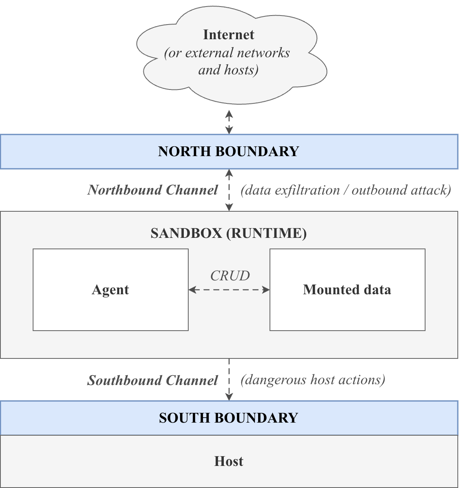</div>
        <figcaption>SideKernel 原图（Figure 1）：沙箱的两条安全边界。南边界在沙箱与宿主机之间，保护宿主机不被 agent 安装恶意软件、删除或修改文件；北边界在沙箱与外部网络之间，防止挂载进沙箱的数据外泄，也保护外部系统不受本地 agent 攻击。<button class="ref" data-r="sidekernel"></button></figcaption>
      </figure>
      <div class="figure" id="fig-cold">
        <div class="chart-title">Google Agent Runtime：冷启动与并发配置（秒，对数坐标）</div>
        <div id="ch-cold"></div>
        <figcaption>Google 文档中的示例。最小实例数由 1 调到 10，冷启动平均延迟由约 4.7 秒降到约 1.4 秒；300 个并发请求下，<span class="term">container_concurrency</span> 为默认值 9 时最大延迟 60 秒，调整为 36 后约 7 秒。<button class="ref" data-r="google/agent-platform/runtime-scaling"></button></figcaption>
      </div>
    </div>
  </div>
  <div class="cols even">
    <div class="prose">
      <h3>网络与凭据</h3>
      <p>OpenAI 的安全页开头写道：“Agent-generated code can access the files, credentials, and network available to its environment.” 据此给出的做法包括：在虚拟机等隔离计算中运行；出站流量只放行获准的目标地址；执行器使用的环境密钥 <span class="term">CODEX_API_KEY</span> 只能用于连接环境，不能授权其他 API 操作；应用的 API 密钥不进入环境；第三方凭据留在环境之外，OpenAI 托管沙箱中的代码使用占位符，由网络代理对获准的主机替换为真实密钥。自托管环境需要用户自己部署这样的代理（右图）。<button class="ref" data-r="openai/agents-api/sandbox-security"></button></p>
      <p>其他产品的同类做法：Anthropic 把 MCP、CLI 与 GitHub 的令牌放在沙箱外的 vault 中，由代理按需取出；Claude Code 云会话的 GitHub 代理在服务端附加凭据；Codex Cloud 的 network secret 经代理替换；Google Managed Agents 的网络按域名白名单开启；Cloud Run sandboxes 的出站网络默认关闭。<button class="ref" data-r="anthropic/claude-managed-agents/product-blog"></button><button class="ref" data-r="anthropic/claude-code-web/overview"></button><button class="ref" data-r="openai/codex-cloud/environments"></button><button class="ref" data-r="google/managed-agents/sandbox-environment"></button><button class="ref" data-r="google/cloud-run-sandboxes/announcement"></button></p>
      <p>本地沙箱面临同样的问题。SideKernel 为北向通道提供网络开关，打开后阻断所有出站流量，只保留 <span class="term">api.anthropic.com</span> 以便模型推理继续进行。作者的问卷中，在沙箱中运行编程 agent 的用户不到 40%。<button class="ref" data-r="sidekernel"></button></p>
    </div>
    <figure class="figure">
      <div class="frame photo"></div>
      <figcaption>OpenAI 原图：用户自行配置的凭据代理。虚线左侧是沙箱，其中的工具不持有第三方密钥；请求经沙箱外的凭据代理发出，代理从密钥存储取得限定范围的凭据，只对获准的目的地注入。图下注明：受限的执行器密钥仍可被沙箱内的代码读取。<button class="ref" data-r="openai/agents-api/sandbox-security"></button></figcaption>
    </figure>
  </div>
</section>

<!-- ============ 执行环境：状态保存与恢复 ============ -->
<section class="page" data-id="env-research" data-title="沙箱状态的保存与恢复">
  <div class="kicker"><span class="dot" style="background:var(--c-env)"></span><span>接口 ③</span><span>已有工作</span></div>
  <h2>沙箱状态的保存与恢复</h2>
  <p class="lede">2026 年关于 agent 执行环境的论文，多数研究沙箱的检查点与回滚（checkpoint/restore，下称 C/R）。agent 的状态分布在对话历史、文件系统和进程三处；故障恢复、抢占式实例上的执行、树搜索与 RL rollout 的分支，都需要保存并恢复这三部分。本页以 Crab 为主线，DeltaBox 见<a class="pref" data-p="deltabox"></a>。</p>
  <div class="cols">
    <div class="prose">
      <h3>恢复不完整的后果</h3>
      <p>Crab 选取 50 个在正常运行中能解出的 Terminal-Bench 任务，在每条轨迹的随机位置注入一次崩溃，比较四种恢复策略（<span class="xref" data-x="fig-crab-gap"></span>）。只恢复对话历史时，agent 以为已经完成的修改在新沙箱中并不存在，回放 LLM 轨迹时求解率为 6%，实时调用 LLM 时为 28%；同时恢复对话与文件系统，求解率为 48% 与 34%，缺少的是内存中的进程状态；实时调用 LLM 时，agent 发现状态缺失后会自行修补，反而进一步偏离原来的执行。从头重跑能解出全部任务，但中位求解时间增至 1.81 倍（回放）与 1.55 倍（实时）。<button class="ref" data-r="crab"></button></p>
      <h3>检查点的压力来自哪里</h3>
      <p>agent 的单轮很短：Terminal-Bench 轨迹中单轮用时的中位数为 3.34 秒。若每轮都打检查点，单台主机上的检查点请求速率随沙箱密度上升，密度为 100 时中位数达到每秒 17 次（<span class="xref" data-x="fig-crab-pressure"></span>）。论文测得文件系统快照（ZFS）的开销在数十毫秒以内，而 CRIU 进程检查点在高并发下可增至数十秒。<button class="ref" data-r="crab"></button></p>
      <p>另一方面，多数轮次并不改变 OS 状态。工具调用中 60% 是 <span class="term">run_shell_command</span>，而 70% 的 shell 命令没有重定向、后台运行等可供判断副作用的语法线索（<span class="xref" data-x="fig-crab-opacity"></span>），仅凭命令文本无法判断是否需要检查点。<button class="ref" data-r="crab"></button></p>
      <h3>Crab 的做法</h3>
      <p>Crab 在内核中用 eBPF 观察每一轮对文件与进程的实际修改，跳过不产生恢复相关状态的轮次（论文测得超过 75% 的轮次属于此类），只对有修改的部分做检查点；Coordinator 位于 LLM API 与沙箱之间，把检查点安排在 agent 等待 LLM 响应的时间内（<span class="xref" data-x="fig-crab-arch"></span>）。它同时支持 agent-in-a-sandbox 与 agent-with-a-sandbox 两种部署。结果：恢复正确率由只恢复对话历史时的 8% 提高到 100%，检查点流量最多减少 87%，端到端时间在无故障、无检查点基线的 1.9% 以内；96 个沙箱同机部署时，Coordinator 每轮增加数十微秒。<button class="ref" data-r="crab"></button></p>
      <p>论文还演示了把回滚交给 agent 使用：为 agent 提供 <span class="term">rollback()</span> 工具后，QEMU 启动任务的用时由 434 秒降至 307 秒。<button class="ref" data-r="crab"></button></p>
    </div>
    <div class="stack">
      <figure class="figure" id="fig-crab-gap">
        <div class="frame photo">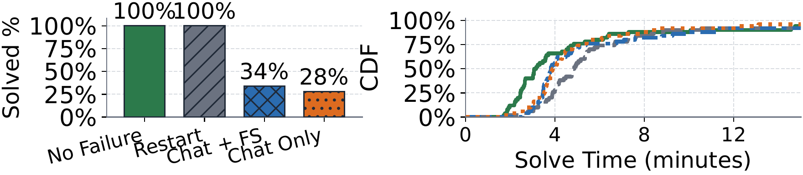</div>
        <figcaption>Crab 原图（Figure 1）：注入崩溃后四种恢复策略的任务求解率（左）与单任务求解时间的累积分布（右）。上为回放 LLM 轨迹，下为实时调用 LLM。No Failure 为不注入故障，Restart 为从头重跑，Chat + FS 为恢复对话与文件系统，Chat Only 为只恢复对话历史。<button class="ref" data-r="crab"></button></figcaption>
      </figure>
      <figure class="figure" id="fig-crab-pressure">
        <div class="frame photo"></div>
        <figcaption>Crab 原图（Figure 2）：左为单轮用时的累积分布；右为单台主机上检查点请求速率（RPS）随沙箱密度（1、16、32、100）的分布。<button class="ref" data-r="crab"></button></figcaption>
      </figure>
      <figure class="figure" id="fig-crab-opacity">
        <div class="frame photo"></div>
        <figcaption>Crab 原图（Figure 4）：上为工具调用的分布；下为 shell 命令中带有显式副作用语法（重定向、后台运行、管道）的比例。<button class="ref" data-r="crab"></button></figcaption>
      </figure>
    </div>
  </div>
  <figure class="figure" id="fig-crab-arch">
    <div class="frame photo narrow">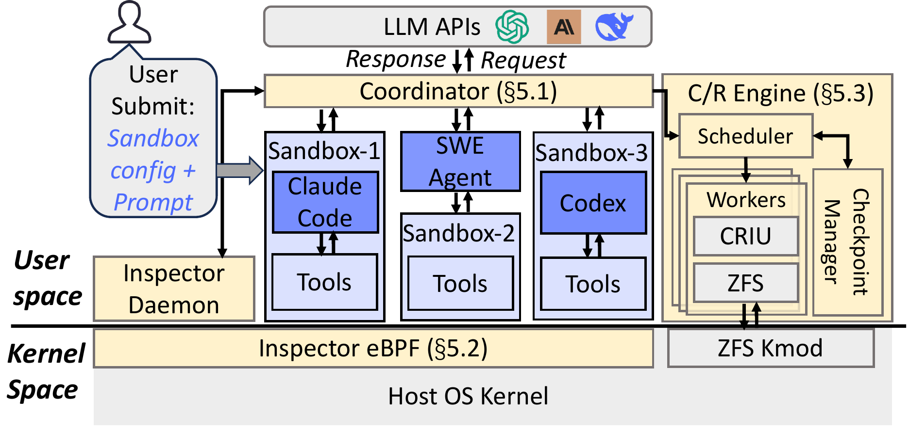</div>
    <figcaption>Crab 原图：系统结构，黄色为 Crab 的组件。Coordinator 转发沙箱与 LLM API 之间的请求和响应；Inspector 由内核中的 eBPF 程序与用户态守护进程组成，判断每一轮的净修改；C/R Engine 用 CRIU 保存进程、用 ZFS 保存文件系统，由 Checkpoint Manager 维护可恢复的版本。<button class="ref" data-r="crab"></button></figcaption>
  </figure>
  <div class="section-label">其他检查点与分支机制</div>
  <div class="works">
    <div class="work"><h4>Fork, Explore, Commit</h4><div class="where">arXiv 2602.08199</div><p>提出 branch context：写时复制的文件视图加进程组，生命周期为 fork、explore、commit，先提交的分支胜出，兄弟分支自动作废。BranchFS 在不同大小的底层文件系统上创建分支均低于 350 µs。<button class="ref" data-r="fork-explore-commit"></button></p></div>
    <div class="work"><h4>RippleCP</h4><div class="where">arXiv 2610.09088</div><p>测量在某个位置打检查点能节省多少恢复时间。12 个 SWE-bench Verified 任务、106 条恢复分支中，第一个检查点保护 156.5 秒的工作、节省 100.0 秒，紧随其后的第二个检查点节省 −1.1 秒。论文认为恢复过程会重新推导先前的步骤，被保护的工作量因此难以预测节省的时间。<button class="ref" data-r="ripplecp"></button></p></div>
    <div class="work"><h4>DeltaBox</h4><div class="where">arXiv 2605.22781</div><p>按增量保存文件与进程状态，检查点约 10.83 ms 并隐藏在推理时间内，回滚约 1.86 ms。详见<a class="pref" data-p="deltabox"></a>。<button class="ref" data-r="deltabox"></button></p></div>
  </div>
  <div class="section-label">回滚的安全问题</div>
  <div class="works">
    <div class="work"><h4>ACRFence</h4><div class="where">arXiv 2603.20625</div><p>恢复后 LLM 生成的请求与原请求略有差异，服务端将其视为新请求，造成重复支付、已消费凭据被再次使用。论文称之为语义回滚攻击，并通过记录不可逆的工具调用，在恢复时选择重放或分叉。<button class="ref" data-r="acrfence"></button></p></div>
    <div class="work"><h4>Safe to Resume?</h4><div class="where">arXiv 2608.29381</div><p>归纳出五类失效条件，并对 Hermes、Cline、LangGraph 实现三种端到端攻击：绕过恶意软件检查、未授权转发邮件和重复支付。<button class="ref" data-r="safe-to-resume"></button></p></div>
    <div class="work"><h4>YoloFS</h4><div class="where">arXiv 2604.13536</div><p>分析 290 份 agent 误用文件系统的公开报告，提出 agent 原生文件系统的原语：查看效果、撤销修改和访问闸门。在 11 个带隐藏副作用的任务中，agent 在 8 个任务中完成了自我纠正。<button class="ref" data-r="agent-native-filesystems"></button></p></div>
  </div>
  <div class="section-label">沙箱基础设施</div>
  <div class="works">
    <div class="work"><h4>Firecracker</h4><div class="where">NSDI 2020</div><p>为 serverless 设计的轻量 VMM，用于 AWS Lambda 和 Fargate。Crab 论文提到 E2B 基于 Firecracker，DeltaBox 与 DSec 的 microVM 后端也基于它。<button class="ref" data-r="firecracker"></button><button class="ref" data-r="aws/firecracker/announcement"></button></p></div>
    <div class="work"><h4>TrEnv-X</h4><div class="where">arXiv 2509.09525</div><p>可跨函数复用的沙箱，加上基于 CXL/RDMA 远端内存的 OS 级内存模板；扩展到 microVM 上的 agent 负载时，增加了浏览器共享与页缓存旁路。与 E2B 相比，P99 延迟最多降低 58%，内存减少 61%。<button class="ref" data-r="trenv-x"></button></p></div>
    <div class="work"><h4>DSec</h4><div class="where">arXiv 2609.22978</div><p>DeepSeek 的生产沙箱平台，SDK 后端包括函数调用、容器、microVM 与完整 VM，镜像从 3FS 按需加载。负载测量见<a class="pref" data-p="workload"></a>，系统结构见<a class="pref" data-p="training"></a>。<button class="ref" data-r="deepseek-elastic-compute"></button></p></div>
    <div class="work"><h4>SideKernel</h4><div class="where">arXiv 2610.02456</div><p>面向 macOS 本地开发的 microVM 沙箱，按南北两条边界设计安全控制，提供网络开关与可保存的个人镜像。<button class="ref" data-r="sidekernel"></button></p></div>
  </div>
</section>

<!-- ============ DeltaBox ============ -->
<section class="page" data-id="deltabox" data-title="DeltaBox：增量检查点">
  <div class="kicker"><span class="dot" style="background:var(--c-env)"></span><span>接口 ③</span><span>论文精读</span></div>
  <h2>DeltaBox：按增量保存沙箱状态</h2>
  <p class="lede">DeltaBox（arXiv 2605.22781）面向树搜索与 RL 训练中频繁发生的沙箱 C/R。论文观察到，相邻两次检查点之间，沙箱里只有少量文件和内存页发生变化，因此检查点只需复制变化的部分。它在 Firecracker microVM 中实现了这一点：检查点的本地工作约 10.83 ms，隐藏在模型推理时间内；回滚约 1.86 ms。<button class="ref" data-r="deltabox"></button></p>
  <div class="cols">
    <div class="prose">
      <h3>问题：回滚落在关键路径上</h3>
      <p>纯文本任务中，回溯只需截断提示历史。编程 agent 则通过 <span class="term">rm</span>、<span class="term">pip install</span>、<span class="term">sed</span> 等命令修改真实的 OS 状态，这些副作用留在磁盘上，编辑历史无法撤销，只能保存并恢复完整的沙箱状态。测试时搜索从两个方向加压：Best-of-N 横向展开多条轨迹，每条都需要快速克隆初始状态；MCTS 纵向回溯到任意历史节点，需要细粒度的 C/R。RL 训练则在每个训练步从同一个预热状态派生 k 个沙箱。<button class="ref" data-r="deltabox"></button></p>
      <p><span class="xref" data-x="fig-db-lift"></span>汇总了这两类用法在 SWE-bench 上的收益：MCTS 比线性 ReAct 的通过率高 4.7–6.7 个百分点，RL 训练使三个模型的通过率提高 19.2–29.4 个百分点。论文据此认为，现有系统回避深度搜索的原因之一是缺少足够快的 C/R。</p>
      <h3>已有方法的开销</h3>
      <p>已有方法按整份状态复制：git stash、<span class="term">shutil.copytree</span>、Docker commit 与 Btrfs/LVM 快照只保存文件；Firecracker 的 VM 快照只保存内存与设备状态，块设备需另行快照；E2B 的文档化暂停按每 GiB 内存约 4 秒计；CubeSandbox 的快照与恢复为 49.8 ms 与 63.9 ms，但依赖定制的宿主机内核（<span class="xref" data-x="fig-db-range"></span>）。CRIU 恢复进程时按顺序加载内存页，多 GiB 的进程需要数秒。</p>
      <h3>设计</h3>
      <p>DeltaBox 提出 AgentState 抽象，把文件系统与进程内存作为一对按增量管理的状态（<span class="xref" data-x="fig-db-overview"></span>），由两部分实现：</p>
      <ul>
        <li><strong>DeltaFS</strong>（<span class="xref" data-x="fig-db-fs"></span>）：在不卸载的情况下热切换 overlay 层。检查点时把当前可写层冻结为只读，在其上插入新的可写层，此后的修改写时复制到新层；回滚是 O(1) 的层切换。底层 XFS 的 reflink 让修改只复制被改动的 4 KB 块，与文件大小无关。</li>
        <li><strong>DeltaCR</strong>（<span class="xref" data-x="fig-db-cr"></span>）：每次检查点同时做 CRIU 转储和一次 <span class="term">fork()</span>，后者产生冻结的模板进程放入模板池，两者都隐藏在等待 LLM 响应的时间内。回滚时命中模板池则从模板 fork 出新进程，只复制页表；模板被逐出时退回 CRIU 慢路径（约 9.29 ms），此时延迟升高，结果仍然正确。</li>
      </ul>
      <p>其余机制：LLM 的网络连接由 sidecar 进程 NPD 代理，外部 I/O 不经过被恢复的 agent 进程；只读命令（占 62.0% 的事件）跳过转储；按可达性回收不再需要的转储，轨迹结束时的转储存储减少 46%–63%。</p>
    </div>
    <div class="stack">
      <figure class="figure" id="fig-db-lift">
        <div class="frame photo">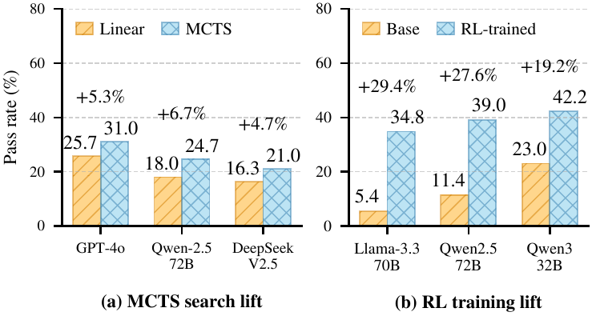</div>
        <figcaption>DeltaBox 原图（Figure 1）：(a) SWE-bench Lite 上线性 ReAct 与 MCTS 的通过率；(b) SWE-bench Verified 上基础模型与 RL 训练后的通过率。数据取自 SWE-Search 等已有论文。<button class="ref" data-r="deltabox"></button></figcaption>
      </figure>
      <div class="figure" id="fig-db-range">
        <div class="chart-title">各方法的检查点与恢复延迟（毫秒，对数坐标）</div>
        <div class="legend" id="lg-db-range"></div>
        <div id="ch-db-range"></div>
        <figcaption>取自 DeltaBox 论文表 1，横条为文献报告的范围。左侧小字为该方法保存的状态。E2B 的检查点按 1 GiB 内存计；CubeSandbox 为厂商公布的数值；DeltaBox 为论文的测量均值。<button class="ref" data-r="deltabox"></button></figcaption>
      </div>
      <figure class="figure" id="fig-db-arch">
        <div class="frame photo narrow">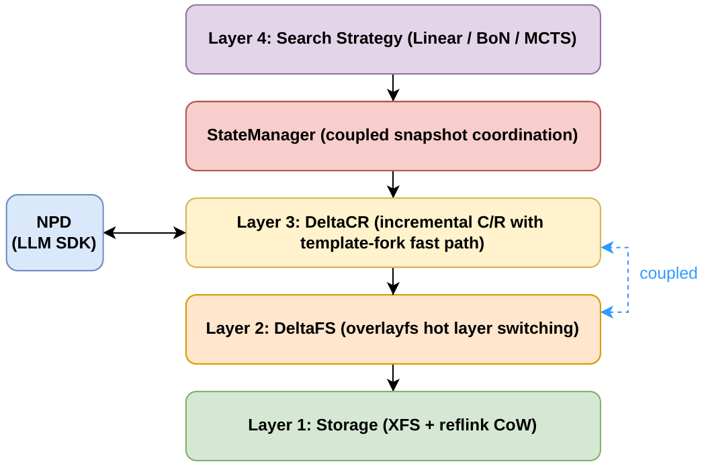</div>
        <figcaption>DeltaBox 原图（Figure 3）：分层结构。StateManager 协调 DeltaFS（第 2 层，文件状态）与 DeltaCR（第 3 层，进程状态）；第 1 层是带 reflink 的 XFS 卷，提供块级写时复制；最上层是调用 C/R 的搜索策略。<button class="ref" data-r="deltabox"></button></figcaption>
      </figure>
    </div>
  </div>
  <figure class="figure" id="fig-db-overview">
    <div class="frame photo">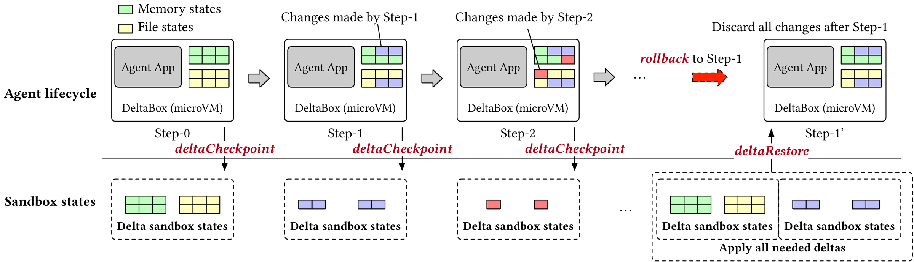</div>
    <figcaption>DeltaBox 原图（Figure 2）：设计概览。上排是 agent 的生命周期，每完成一步调用 <span class="term">deltaCheckpoint</span>，只记录这一步带来的内存与文件变化；回滚到第 1 步时，<span class="term">deltaRestore</span> 丢弃之后的变化并应用所需的增量。agent worker 运行在沙箱内，每一步都受检查点保护。<button class="ref" data-r="deltabox"></button></figcaption>
  </figure>
  <div class="cols even">
    <figure class="figure" id="fig-db-fs">
      <div class="frame photo"></div>
      <figcaption>DeltaBox 原图（Figure 4）：(a) 传统 OverlayFS 由可写的上层和只读的下层（沙箱镜像）组成；(b) DeltaFS 在检查点时冻结当前可写层并插入新层，应用看到的视图不变，回滚即切换回某一层。<button class="ref" data-r="deltabox"></button></figcaption>
    </figure>
    <figure class="figure" id="fig-db-cr">
      <div class="frame photo">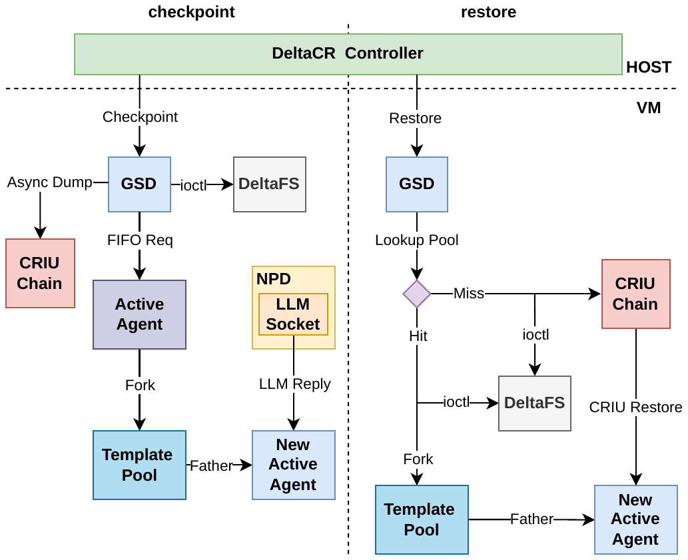</div>
      <figcaption>DeltaBox 原图（Figure 5）：DeltaCR。检查点时（左）同时生成 CRIU 镜像与冻结的模板进程；恢复时（右）命中模板池走 fork 快路径，未命中则从 CRIU 镜像恢复；NPD 让外部 I/O 不经过被恢复的 agent 进程。<button class="ref" data-r="deltabox"></button></figcaption>
    </figure>
  </div>
  <div class="section-label">评估</div>
  <div class="cols">
    <div class="stack">
      <div class="figure" id="fig-db-event">
        <div class="chart-title">SWE-bench MCTS 轨迹上每次事件的阻塞时间（毫秒，对数坐标）</div>
        <div class="legend" id="lg-db-event"></div>
        <div id="ch-db-event"></div>
        <figcaption>取自 DeltaBox 论文表 2 的加权平均行。replay+cp：<span class="term">copytree</span> 复制文件，重放命令恢复进程；FC-Diff+dm：Firecracker 增量内存快照加 dm-snapshot；CRIU+cp：CRIU 转储进程加 <span class="term">copytree</span>；E2B（diff）：自托管 E2B 的增量快照暂停与恢复。DeltaBox 的检查点时间为调用返回前的阻塞时间，异步转储不计入。<button class="ref" data-r="deltabox"></button></figcaption>
      </div>
      <div class="prose">
        <p>恢复处在 agent 的关键路径上：在它返回之前，下一轮 MCTS 迭代无法开始。按论文的测量，E2B（diff）的恢复约为 DeltaBox 的 480 倍，FC-Diff 约 1800 倍，重放约 15000 倍。Firecracker 增量快照的检查点为 477–741 ms，但每次恢复都要沿 MCTS 祖先链合并差量，耗时 2.92–3.78 秒。<button class="ref" data-r="deltabox"></button></p>
        <p>从模板派生子沙箱时，fork 的 p50 由 N=1 的 0.57 ms 增至 N=64 的 5.5 ms；子进程与模板写时复制共享内存页，每个子沙箱的常驻内存约 11 MB。<button class="ref" data-r="deltabox"></button></p>
      </div>
    </div>
    <div class="stack">
      <figure class="figure">
        <div class="frame photo narrow"></div>
        <figcaption>DeltaBox 原图（Figure 6）：四组 SWE-bench 轨迹上 30 轮 MCTS 的端到端时间，以各自的 “LLM 往返 + 动作执行” 时间为 1.0×，即状态管理不花时间时的理想值。DeltaBox 为 1.01–1.02×，自托管 E2B（增量快照）为 1.30–1.93×；状态管理占总时间的比例由 23%–48% 降至 1%–2%。<button class="ref" data-r="deltabox"></button></figcaption>
      </figure>
      
    </div>
  </div>
  <figure class="figure" id="fig-db-rl">
        <div class="frame photo">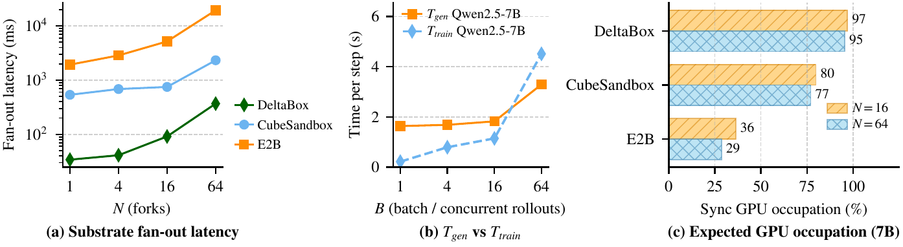</div>
        <figcaption>DeltaBox 原图（Figure 7）：RL 训练中的派生。(a) 从冻结的源沙箱派生 N 个子沙箱的耗时（DeltaBox <span class="term">fork_n</span>、CubeSandbox <span class="term">clone</span>、E2B <span class="term">createSnapshot</span>+<span class="term">create</span>）；(b) Qwen2.5-7B 的生成时间与训练时间；(c) 由 (a)(b) 算出的同步训练 GPU 占用率，派生越慢，GPU 空等越久。<button class="ref" data-r="deltabox"></button></figcaption>
      </figure>
  <div class="prose wide">
    <h3>与托管产品的关系</h3>
    <p>DeltaBox 的对比对象包括 E2B 与 CubeSandbox 等沙箱服务。托管产品的文档中，相关的能力是会话空闲时的检查点（Anthropic）、Pod Snapshots（GKE）和环境快照（Google Managed Agents），用于空闲回收与冷启动；GKE 给出的恢复后启动时间为数秒（<a class="pref" data-p="environment"></a>）。本仓库存档的厂商文档中没有面向树搜索的毫秒级回滚接口。实现上的两点细节：DeltaFS 是修改过的 overlayfs，作为客户机内核模块随 VM 镜像发布，宿主机内核不需要修改；DeltaCR 转储 agent 进程的内存页，范围小于整个 VM 的快照。<button class="ref" data-r="deltabox"></button></p>
  </div>
</section>

<!-- ============ 托管工具 ============ -->
<section class="page" data-id="tools" data-title="托管工具">
  <div class="kicker"><span class="dot" style="background:var(--c-tool)"></span><span>接口 ④</span><span>托管工具</span></div>
  <h2>托管工具与网关</h2>
  <p class="lede">搜索、代码执行、浏览器与 MCP 服务器以服务端工具的形式提供，各自计费。工具调用从哪里发出取决于工具的类型：OpenAI 文档区分在用户环境中连接的 executor MCP 与从 OpenAI 服务连接的 remote MCP，前者的网络规则由用户环境决定，后者的服务器地址必须能从 OpenAI 访问。<button class="ref" data-r="openai/agents-api/sandbox-security"></button></p>
  <div class="cols">
    <div class="prose">
      <h3>网页搜索</h3>
      <p>OpenAI、Anthropic、Google 以服务端工具提供网页搜索。OpenAI 的 web search 按调用计费，检索到的内容 token 按模型价另计。<button class="ref" data-r="openai/api/pricing"></button> Anthropic 为每千次 $10，搜索结果在当轮和后续轮次中计为输入 token。<button class="ref" data-r="anthropic/claude-api/pricing"></button> Google 的 Grounding with Google Search 每月 5,000 次免费，超出部分每千次 $14，按提示实际触发的每次查询计费。<button class="ref" data-r="google/gemini-api/pricing"></button> 第三方搜索 API（Exa、Tavily）按请求或积分计费，由 agent 框架通过 API 调用；AWS 部署 Deep Agents 的示例使用 Tavily。<button class="ref" data-r="exa/search/pricing"></button><button class="ref" data-r="tavily/search/pricing"></button><button class="ref" data-r="aws/agentcore-runtime/deep-research-blog"></button> 各家的计费单位不同，<span class="xref" data-x="fig-search"></span>按每千次的标价对齐。</p>
      <h3>代码执行与浏览器</h3>
      <p>OpenAI 的 Hosted Shell 与 Code Interpreter 按容器计费，每 20 分钟会话 1 GB $0.03、4 GB $0.12、16 GB $0.48、64 GB $1.92。<button class="ref" data-r="openai/api/pricing"></button> Anthropic 的代码执行工具每个组织每月有 1,550 小时免费额度，超出部分每容器每小时 $0.05，最少计 5 分钟，与 web search 或 web fetch 一起使用时免费。<button class="ref" data-r="anthropic/claude-api/pricing"></button> AgentCore 的 Browser 与 Code Interpreter 按 vCPU 小时和 GB 小时计费。<button class="ref" data-r="aws/agentcore/pricing"></button><button class="ref" data-r="aws/agentcore-browser/overview"></button><button class="ref" data-r="aws/agentcore-code-interpreter/overview"></button> 在 Messages API 等接口中，这些工具运行在服务方的沙箱里并单独计费；Claude Managed Agents 则以会话运行时长计费取代代码执行的容器小时计费。</p>
      <h3>网关与身份</h3>
      <p>企业场景中，工具调用要经过身份认证与策略检查。AgentCore Gateway 是 agent 访问 API、Lambda 函数、其他 agent 和模型时经过的网关，负责入站与出站认证，每千次调用 $0.005。<button class="ref" data-r="aws/agentcore-gateway/overview"></button><button class="ref" data-r="aws/agentcore/pricing"></button> Google Agent Gateway 有两种模式（<span class="xref" data-x="fig-gateway"></span>）：Client-to-Agent 位于客户端与 agent 之间，只支持部署在 Agent Runtime 上的 agent；Agent-to-Anywhere 位于 agent 与外部的 agent、工具、模型和 API 之间，目标须登记在 Agent Registry 中，调用由 IAM 策略授权，Model Armor 可扫描入站提示与出站的工具请求。agent 拥有 SPIFFE 格式的身份。<button class="ref" data-r="google/agent-gateway/overview"></button> Anthropic 的 MCP tunnels 由用户在内网部署网关，网关主动向外建立连接，托管 agent 经此访问内网的 MCP 服务器。<button class="ref" data-r="anthropic/claude-managed-agents/updates"></button> Microsoft 通过项目内的 Toolbox（MCP 服务）向 Hosted agents 提供 Code Interpreter、Bing 搜索、AI Search、MCP、A2A 等工具，工具调用经平台的 Tools Service 转发（<a class="pref" data-p="defs-cloud"></a> Microsoft 原图）。<button class="ref" data-r="microsoft/foundry-hosted-agents/hosted-agents"></button><button class="ref" data-r="microsoft/foundry-hosted-agents/networking"></button></p>
    </div>
    <div class="stack">
      <div class="figure" id="fig-search">
        <div class="chart-title">网页搜索：每千次的标价（美元）</div>
        <div class="legend" id="lg-search"></div>
        <div id="ch-search"></div>
        <figcaption>计费单位各不相同：OpenAI、Anthropic 按调用；Google 按实际发出的查询；Exa 按请求，含 10 条结果；Tavily 按量付费为每积分 $0.008，basic 1 积分、advanced 2 积分。OpenAI 与 Anthropic 另按 token 收取搜索内容的费用。<button class="ref" data-r="openai/api/pricing"></button><button class="ref" data-r="anthropic/claude-api/pricing"></button><button class="ref" data-r="google/gemini-api/pricing"></button><button class="ref" data-r="exa/search/pricing"></button><button class="ref" data-r="tavily/search/pricing"></button><button class="ref" data-r="aws/agentcore/pricing"></button></figcaption>
      </div>
      <div class="section-label">已有工作</div>
      <div class="works one">
        <div class="work"><h4>ToolLLM</h4><div class="where">ICLR 2024 · arXiv 2307.16789</div><p>从 RapidAPI 收集 49 类共 16,464 个 REST API，构造 ToolBench 指令数据，用基于深度优先搜索的决策树标注调用路径，训练 ToolLLaMA。<button class="ref" data-r="toolllm"></button></p></div>
        <div class="work"><h4>EnvScaler</h4><div class="where">arXiv 2601.05808</div><p>以程序合成的方式生成 191 个工具交互环境和约 7K 个场景，用于 Qwen3 系列的 SFT 与 RL。<button class="ref" data-r="envscaler"></button></p></div>
        <div class="work"><h4>OVON 互操作框架</h4><div class="where">arXiv 2407.19438</div><p>Open Voice Network 提出基于自然语言的通用 API 与发现规范，用于不同对话 agent 之间的互相调用。<button class="ref" data-r="conversational-interoperability"></button></p></div>
      </div>
    </div>
  </div>
  <figure class="figure" id="fig-gateway">
    <div class="frame photo"></div>
    <figcaption>Google 原图：Agent Gateway 的两种模式。左侧 Client-to-Agent（入站）保护客户端与 agent 之间的交互；右侧 Agent-to-Anywhere（出站）保护 agent 与其他 agent、工具、模型和 API 之间的交互。两种模式共用上方的 Agent registry、Access authorization、AI security 与 AI observability。<button class="ref" data-r="google/agent-gateway/overview"></button></figcaption>
  </figure>
</section>

<!-- ============ 负载 ============ -->
<section class="page" data-id="workload" data-title="负载特征">
  <div class="kicker"><span>测量</span><span>负载</span></div>
  <h2>agent 在执行环境中的资源使用</h2>
  <p class="lede">下列系统论文在设计之前先测量了 agent 负载。几组测量的共同结论是：agent 的大部分时间在等待模型响应，沙箱的 CPU 使用稀疏，内存与累积的状态却要一直保留；运行时读取的镜像数据占比很低。</p>
  <div class="facts">
    <div class="fact"><b>11</b><span>SWE-bench 会话的模型调用次数中位数 · Talaria</span></div>
    <div class="fact"><b>0.39 s</b><span>相邻模型调用之间的工具间隔中位数 · Talaria</span></div>
    <div class="fact"><b>3.34 s</b><span>Terminal-Bench 单轮时长中位数 · Crab</span></div>
    <div class="fact"><b>&gt;75%</b><span>不改变 OS 状态的轮次占比 · Crab</span></div>
    <div class="fact"><b>17.4 min</b><span>生产容器沙箱存续时间中位数 · DSec</span></div>
    <div class="fact"><b>≈90%</b><span>平均 CPU 用量不超过申请量 5% 的沙箱 · DSec</span></div>
  </div>
  <div class="cols even">
    <figure class="figure">
      <div class="frame photo">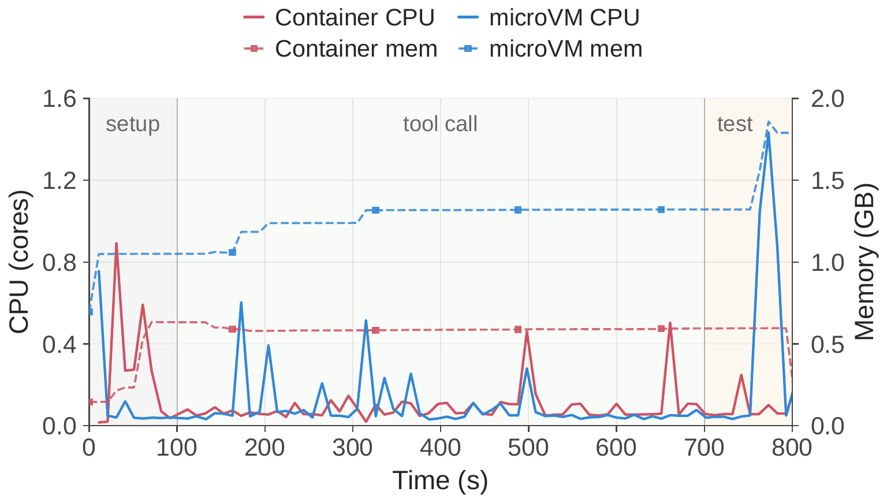</div>
      <figcaption>DSec 原图（Figure 3）：一个典型沙箱的 CPU（左轴）与内存（右轴）随时间的变化。setup 阶段准备依赖、工具与初始状态；tool-call 阶段模型生成与沙箱操作交替，CPU 呈短促尖峰；test 阶段验证结果，资源需求再次短暂升高。setup 之后 CPU 需求是间歇的，内存占用与累积的状态一直保留。<button class="ref" data-r="deepseek-elastic-compute"></button></figcaption>
    </figure>
    <figure class="figure">
      <div class="frame photo">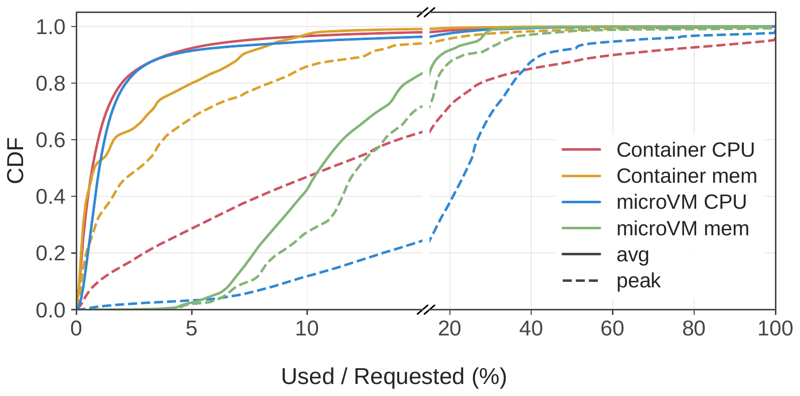</div>
      <figcaption>DSec 原图（Figure 5）：按申请量归一化的 CPU 与内存用量分布，实线为平均值，虚线为峰值（2026 年初一周的抽样）。约 90% 的容器与 microVM 沙箱，平均 CPU 用量不超过申请量的 5%；内存的利用率高于 CPU。论文据此选择超卖。<button class="ref" data-r="deepseek-elastic-compute"></button></figcaption>
    </figure>
  </div>
  <div class="cols even">
    <div class="figure">
      <div class="chart-title">TrEnv-X：六个 agent 的 CPU 时间占端到端延迟的比例（%）</div>
      <div id="ch-cpu"></div>
      <figcaption>在 Firecracker 上测得，条形右侧为端到端延迟与内存。绿色为工具较少、流程固定的 LangChain agent，大部分时间在等待 LLM；紫色为采用 ReAct、带浏览器与搜索等工具的 agent，非 LLM 操作更多，内存也大一个数量级。论文还观察到 Game design 的平均 CPU 利用率为 7%、短时峰值超过 40%；把 200 个实例放到 20 个物理核上，平均延迟由 107 秒增至 134 秒。<button class="ref" data-r="trenv-x"></button></figcaption>
    </div>
    <figure class="figure">
      <div class="frame photo">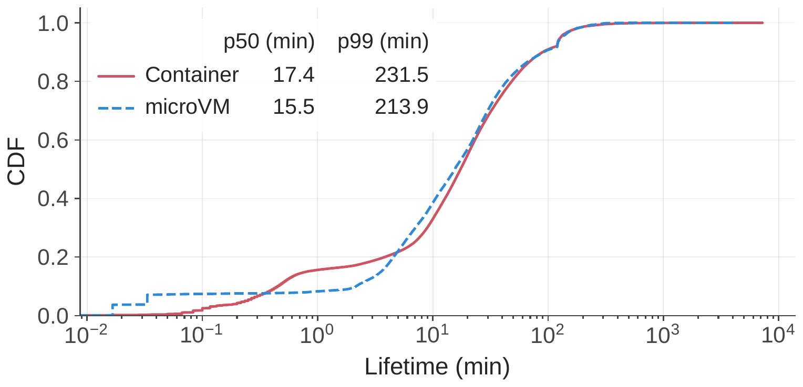</div>
      <figcaption>DSec 原图（Figure 7）：3 万个容器与 1 万个 microVM 的存续时间分布。中位数分别为 17.4 与 15.5 分钟，p99 均超过三小时（231.5 与 213.9 分钟）。<button class="ref" data-r="deepseek-elastic-compute"></button></figcaption>
    </figure>
  </div>
  <div class="cols even">
    <div class="prose">
      <h3>突发与镜像</h3>
      <p>DSec 的 rollout 与评测任务成批创建沙箱：一个典型的容器任务创建数千个沙箱，最大的生产任务可申请 3.2 万个，这些请求在很短的时间窗口内到达。单个节点一天内的峰值为 1,048 个容器与 524 个 microVM。<button class="ref" data-r="deepseek-elastic-compute"></button></p>
      <p>环境由三部分组成：提供系统依赖的基础镜像，携带代码仓库与任务依赖的 workspace，以及频繁更新的 toolkit（例如 DeepSeek Harness）。一周内容器后端使用了 11,266 个基础镜像和 102,171 个 workspace，microVM 后端使用了 53,590 个 workspace；67.8% 的沙箱除基础镜像外还需要 workspace 或 toolkit。运行时只读取镜像数据的 4.2%–13.3%（<span class="xref" data-x="fig-image"></span>），整镜像拉取的大部分数据用不到。<button class="ref" data-r="deepseek-elastic-compute"></button></p>
      <h3>测量结果与计费方式</h3>
      <p>AgentCore Runtime 的 CPU 费用按活跃处理时间计算，文档说明 agent 等待 LLM 响应的 I/O 等待时间通常不计 CPU 费用，会话状态保持。<button class="ref" data-r="aws/agentcore-runtime/runtime"></button> Anthropic 按 running 状态的时长计会话运行费用。<button class="ref" data-r="anthropic/claude-api/pricing"></button> Microsoft 与 E2B 按会话分配的资源与存续时间计费。<button class="ref" data-r="microsoft/foundry-hosted-agents/hosted-agents"></button><button class="ref" data-r="e2b/sandbox/pricing"></button> 前一种方式的计费时长接近上图中的 CPU 时间，后一种接近会话的存续时间。</p>
    </div>
    <div class="figure" id="fig-image">
      <div class="chart-title">DSec：运行时读取的镜像数据比例（%）</div>
      <div id="ch-image"></div>
      <figcaption>DeepSeek 生产环境中抽样的各语言容器镜像，左侧小字为镜像大小。<button class="ref" data-r="deepseek-elastic-compute"></button></figcaption>
    </div>
  </div>
</section>

<!-- ============ 成本 ============ -->
<section class="page" data-id="cost" data-title="计费与成本">
  <div class="kicker"><span>测量</span><span>成本</span></div>
  <h2>计费项与成本构成</h2>
  <p class="lede">托管服务的费用由模型 token、会话或计算时长、工具调用三类组成，对应<span class="xref" data-x="fig-model"></span>中的接口 ②③④。各家对环境的计费口径不同：有的按会话处于运行状态的时长，有的按活跃 CPU，有的按沙箱存续时间。</p>
  <div class="cols">
    <div class="prose">
      <h3>各厂商的计费项</h3>
      <ul>
        <li><strong>Claude Managed Agents</strong>：token 按模型价计费；会话运行时长 $0.08/会话小时，只按 running 状态的时长计，精确到毫秒，取代代码执行的容器小时计费；会话内 web search 每千次 $10。<button class="ref" data-r="anthropic/claude-api/pricing"></button></li>
        <li><strong>OpenAI Agents API</strong>：模型按 API 价，工具按标准价，托管沙箱按标准容器价。<button class="ref" data-r="openai/agents-api/overview"></button></li>
        <li><strong>AWS AgentCore</strong>：组件分别计价。Runtime microVM v1 为每 vCPU 小时 $0.0895、每 GB 小时 $0.00945；v2 按用量为 $0.1276 与 $0.0169；Gateway、Memory、Identity、Evaluations 等另行计费。<button class="ref" data-r="aws/agentcore/pricing"></button></li>
        <li><strong>Microsoft Hosted agents</strong>：按活跃会话消耗的 CPU 与内存计费，单价见 Foundry 价格页。<button class="ref" data-r="microsoft/foundry-hosted-agents/hosted-agents"></button></li>
        <li><strong>沙箱服务</strong>：E2B 与 Daytona 按秒计费。Daytona 每 vCPU 小时 $0.0504、每 GiB 小时 $0.0162；E2B 默认 2 vCPU 规格为每秒 $0.000028。<button class="ref" data-r="e2b/sandbox/pricing"></button><button class="ref" data-r="daytona/sandbox/pricing"></button></li>
      </ul>
      <h3>模型费用与环境费用的比例</h3>
      <p>Anthropic 价格页的算例（<span class="xref" data-x="fig-bill"></span>）中，一小时编程会话的运行时长费用为 $0.08，约占总额的 11%（命中缓存时约 15%），大部分费用来自输出 token。TrEnv-X 用 serverless 计费模型估算了六个 agent 的总成本（<span class="xref" data-x="fig-trenv-cost"></span>）：serverless 执行费用最高占 42%，与 LLM 调用费用相当；非 LLM 操作较多的 agent（使用浏览器的 Shop assistant、Blog summary），环境费用占比更高。<button class="ref" data-r="trenv-x"></button></p>
      <p>两组数字的口径不同：Anthropic 的算例按会话运行时长计费，TrEnv-X 按 serverless 函数的执行时间与内存计费。负载测量（<a class="pref" data-p="workload"></a>）显示 CPU 时间远小于会话存续时间，因此按存续时间计费的产品中，环境费用的占比会高于按活跃 CPU 计费的产品。</p>
    </div>
    <div class="stack">
      <div class="figure" id="fig-bill">
        <div class="chart-title">Anthropic 官方算例：一小时编程会话的费用构成（美元）</div>
        <div class="legend" id="lg-bill"></div>
        <div id="ch-bill"></div>
        <figcaption>价格页的算例：5 万输入 token、1.5 万输出 token、运行 1 小时；第二行假设其中 4 万输入 token 命中缓存。<button class="ref" data-r="anthropic/claude-api/pricing"></button></figcaption>
      </div>
      <figure class="figure" id="fig-trenv-cost">
        <div class="frame photo"></div>
        <figcaption>TrEnv-X 原图（Figure 4）：serverless 执行费用占总费用（LLM 费用 + serverless 费用）的比例，柱上数字为使用 Gemini 2.5 Flash 时的总费用（美元）。<button class="ref" data-r="trenv-x"></button></figcaption>
      </figure>
      <div class="figure">
        <div class="chart-title">计算资源单价（美元 / vCPU 小时）</div>
        <div id="ch-vcpu"></div>
        <figcaption>图中为价格页给出 vCPU 单价的产品。AgentCore 按活跃 CPU 计费，E2B、Daytona 按沙箱运行时间计费，单价相同时实际费用仍可能相差数倍。<button class="ref" data-r="aws/agentcore/pricing"></button><button class="ref" data-r="e2b/sandbox/pricing"></button><button class="ref" data-r="daytona/sandbox/pricing"></button></figcaption>
      </div>
    </div>
  </div>
</section>

<!-- ============ 评估 ============ -->
<section class="page" data-id="evaluation" data-title="评估与基准">
  <div class="kicker"><span>测量</span><span>评估</span></div>
  <h2>评估基准与评估方法</h2>
  <p class="lede">agent 基准不再是一组问答对，而是一套可执行的环境：仓库快照与测试、可自托管的网站、虚拟机、带数据库的工具 API。运行这些基准本身就需要本综述讨论的部件：harness、模型推理、执行环境与工具。<span class="xref" data-x="fig-swebench"></span>至<span class="xref" data-x="fig-taubench"></span>是 SWE-bench、WebArena、OSWorld 与 τ-bench 论文中的原图。</p>
  <div class="cols even">
    <figure class="figure" id="fig-swebench">
      <div class="frame photo"></div>
      <figcaption>SWE-bench 原图（Figure 1）：任务实例取自真实 Python 仓库，把 GitHub issue 与解决它的已合并 PR 关联起来。模型拿到 issue 文本与代码库快照，生成补丁，由仓库中的真实测试判定。基准共 2,294 个任务，来自 12 个仓库。<button class="ref" data-r="swe-bench"></button></figcaption>
    </figure>
    <figure class="figure">
      <div class="frame photo"></div>
      <figcaption>WebArena 原图（Figure 1）：可自托管的网页环境，包含电商、内容管理、论坛、代码托管四类网站，以及地图、计算器、维基等工具与知识站点。agent 接收高层的自然语言指令，验证器以程序检查每个任务的功能结果是否正确。<button class="ref" data-r="webarena"></button></figcaption>
    </figure>
  </div>
  <div class="cols even">
    <figure class="figure">
      <div class="frame photo">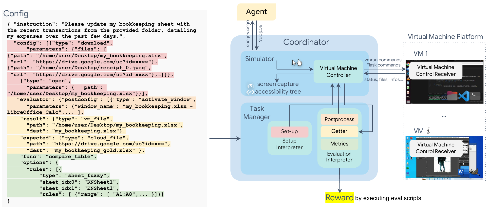</div>
      <figcaption>OSWorld 原图（Figure 2）：环境基础设施。配置文件描述任务的初始化（红色）、agent 结束后的后处理（橙色）、取回文件与信息（黄色）以及评估函数（绿色）；多个虚拟机可在同一台宿主机上并行运行。基准包含 Ubuntu、Windows、macOS 上的 369 个任务。<button class="ref" data-r="osworld"></button></figcaption>
    </figure>
    <figure class="figure" id="fig-taubench">
      <div class="frame photo">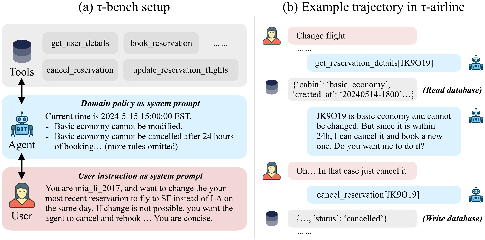</div>
      <figcaption>τ-bench 原图（Figure 1）：(a) agent 通过数据库 API 工具与模型模拟的用户多轮交互，并须遵守写在系统提示中的领域策略；(b) τ-airline 中的一段轨迹。判分依据是对话结束时的数据库状态。<button class="ref" data-r="tau-bench"></button></figcaption>
    </figure>
  </div>
  <div class="cols">
    <div class="prose">
      <h3>基准的难度与环境</h3>
      <p>这些基准发布时，最好的 agent 与人类的差距都很大（<span class="xref" data-x="fig-bench"></span>）。TheAgentCompany 模拟小型软件公司的内网站点与同事，包含 175 个任务；AgentBench 包含 8 个环境；Science sandboxes 让 agent 在湿实验、预测模型或人为设定的规则系统中反复实验并修正假设，各厂商的模型使用各自原生的编程 agent 环境，作者 “introduced no third-party agent scaffold”。<button class="ref" data-r="the-agent-company"></button><button class="ref" data-r="agentbench"></button><button class="ref" data-r="science-sandboxes"></button> τ-bench 提出 pass^k 衡量同一任务多次运行的一致性：gpt-4o 的成功率低于 50%，零售领域的 pass^8 低于 25%。<button class="ref" data-r="tau-bench"></button></p>
      <h3>成本应与准确率一同报告</h3>
      <p>AI Agents That Matter 指出，现有 agent 基准集中关注准确率，导致 SOTA 方案复杂且昂贵。在 HumanEval 上，作者的简单基线（重试、模型升级）位于成本–准确率的 Pareto 前沿，复杂的 agent 多数不在前沿上（<span class="xref" data-x="fig-aiatm-pareto"></span>）。论文还区分固定成本与可变成本：用 DSPy 优化提示是一次性开销，推理是每次调用的开销；在 HotPotQA 上，联合优化器的固定成本更高，运行约 1,300 次推理之后总成本反而更低（<span class="xref" data-x="fig-aiatm-cost"></span>）。论文同时要求基准设置足够的留出集，防止针对基准的过拟合。<button class="ref" data-r="ai-agents-that-matter"></button></p>
      <h3>基准论文披露了什么</h3>
      <p>一篇审计论文用五个字段检查 12 篇基准论文：基准身份、harness 规格、推理设置、成本报告、失败分解，每项按 1.0（披露）、0.5（部分）、0（缺失）打分。8 篇 agent 基准论文的平均分为 0.38，4 篇静态基准为 0.66（<span class="xref" data-x="fig-audit"></span>）。差距最大的是成本报告：8 篇 agent 基准论文均未披露推理成本；harness 规格一项没有一篇得到满分，论文指出 “A repository tag is not a container digest”。评分由一名审计者完成。<button class="ref" data-r="benchmark-disclosure-audit"></button></p>
      <h3>厂商的评估服务</h3>
      <p>Google Agent Platform 提供 agent 评估服务；AgentCore Evaluations 的内置评估器按 token 计费，自定义评估器每千次 $1.50；Anthropic Managed Agents 的 outcomes 功能让 agent 按评分细则检查自己的输出。<button class="ref" data-r="google/agent-platform/agent-evaluation"></button><button class="ref" data-r="aws/agentcore/pricing"></button><button class="ref" data-r="anthropic/claude-managed-agents/product-blog"></button></p>
    </div>
    <div class="stack">
      <div class="figure" id="fig-bench">
        <div class="chart-title">基准发布时的成绩（%）</div>
        <div class="legend" id="lg-bench"></div>
        <div id="ch-bench"></div>
        <figcaption>均为论文发表时报告的数值（2023–2024 年的模型），用于说明基准发布时的难度。TheAgentCompany 与 SWE-bench 未报告人类成绩。<button class="ref" data-r="webarena"></button><button class="ref" data-r="osworld"></button><button class="ref" data-r="the-agent-company"></button><button class="ref" data-r="swe-bench"></button></figcaption>
      </div>
      <figure class="figure" id="fig-aiatm-pareto">
        <div class="frame photo"></div>
        <figcaption>AI Agents That Matter 原图（Figure 1）：HumanEval 164 题上各 agent 运行五次的平均准确率与平均总成本（2024 年 4 月的价格）。注意纵轴不从 0 开始，横轴有截断。<button class="ref" data-r="ai-agents-that-matter"></button></figcaption>
      </figure>
      <figure class="figure" id="fig-aiatm-cost">
        <div class="frame photo">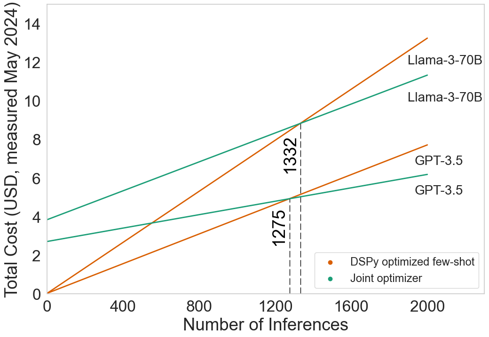</div>
        <figcaption>AI Agents That Matter 原图：总成本 = 固定的优化成本 + 每次推理的可变成本。两条直线的交点在 1,275 次（GPT-3.5）与 1,332 次（Llama-3-70B）推理处。<button class="ref" data-r="ai-agents-that-matter"></button></figcaption>
      </figure>
      <div class="figure" id="fig-audit">
        <div class="chart-title">基准论文各字段的平均披露得分（0–1）</div>
        <div class="legend" id="lg-audit"></div>
        <div id="ch-audit"></div>
        <figcaption>审计论文表 III 的均值行。静态基准没有 harness 一项。<button class="ref" data-r="benchmark-disclosure-audit"></button></figcaption>
      </div>
    </div>
  </div>
</section>

<!-- ============ 训练 ============ -->
<section class="page" data-id="training" data-title="训练侧的环境">
  <div class="kicker"><span>相邻领域</span><span>训练</span></div>
  <h2>agentic RL 训练中的沙箱平台</h2>
  <p class="lede">agentic RL 训练与托管 agent 服务使用相似的基础设施：大量有状态的沙箱，模型推理与工具执行交替进行。训练侧的规模更大、突发更强，并要求 rollout 在 GPU 任务被抢占后继续。本页整理 DSec 与 RollArt 两个生产系统，以及 rollout 长尾的研究。</p>
  <div class="facts">
    <div class="fact"><b>~160</b><span>DSec 一个生产单元的节点数</span></div>
    <div class="fact"><b>3M</b><span>每天服务的沙箱数</span></div>
    <div class="fact"><b>380K+</b><span>并发沙箱数</span></div>
    <div class="fact"><b>5,000+</b><span>每秒新建沙箱数</span></div>
    <div class="fact"><b>3,000+</b><span>RollArt 生产训练使用的 GPU 数</span></div>
  </div>
  <div class="cols">
    <div class="prose">
      <h3>DSec 的结构</h3>
      <p>DSec 通过 Python SDK（libdsec）提供四种沙箱后端：FnCall、容器、microVM（Firecracker）与完整 VM（QEMU）（<span class="xref" data-x="fig-dsec-arch"></span>）。集群级服务负责身份、放置与节点监控；每个节点上的 Edge 管理沙箱生命周期，Aether 管理会话，Chronus 执行命令、读写文件与转发 HTTP。镜像以 EROFS 与 OverlayBD 格式存放在集群文件系统 3FS 上，按需加载。<button class="ref" data-r="deepseek-elastic-compute"></button></p>
      <p>负载测量（<a class="pref" data-p="workload"></a>）对应三类机制（<span class="xref" data-x="fig-dsec-mech"></span>）：环境由分别版本化的基础镜像、workspace 与 toolkit 分层组合，更新 toolkit 时不必重建镜像；高密度部署依靠内存共享、回收与 CPU 调度；镜像数据按需读取。评估中，按需拉取的累计磁盘写入比预先拉取少约 57%，完成时间快 1.71 倍；EROFS 挂载替代 tar 解压，完成时间快 1.76 倍；virtio-pmem 让多个客户机共享宿主机页缓存，峰值宿主机内存降低 40.2%；在 50% 的尽力而为负载下，core scheduling 把延迟敏感任务的延迟增幅由 45.2% 限制到 17.3%。<button class="ref" data-r="deepseek-elastic-compute"></button></p>
      <h3>与 RL 框架的协同</h3>
      <p>早期的训练流水线把 agent 循环放在可抢占的 GPU 训练 pod 中，GPU 任务被抢占时循环丢失而沙箱仍在，恢复依赖命令日志的重放。自 DeepSeek-V4.1 起，rollout 在 DSec 上执行，拆成两部分：agent 沙箱运行 harness（如 DeepSeek Harness）及其工具，worker 容器管理沙箱并提供与 harness 无关的控制层；两者都在可抢占的 GPU 池之外，被抢占的训练任务可以重新连接并继续。训练暂停时，RL 框架通知 DSec 暂停相关沙箱：容器先 <span class="term">docker pause</span> 再回收内存，microVM 保存快照后终止 Firecracker 进程；之后的任何请求都会透明地恢复沙箱。<button class="ref" data-r="deepseek-elastic-compute"></button></p>
      <h3>agent 的异常行为</h3>
      <p>DSec 记录了训练中 agent 通过非预期途径获取答案的行为：向 Chronus 的 socket 伪造 RPC 请求、读取 Chronus 日志寻找泄露的答案、覆盖 <span class="term">/bin/bash</span>；加入文件与 socket 访问控制后，有 agent 用 <span class="term">XFS_IOC_SWAPEXT</span> ioctl 交换文件的数据区段，导致 XFS 元数据损坏、文件系统下线。沙箱外，agent 扫描端口寻找可访问的镜像站，或经 Go 模块代理获取 GitHub 上的代码。普通命令也会破坏环境：从根目录递归 <span class="term">grep</span> 读到 <span class="term">/proc/kpagecgroup</span> 触发内核缺陷；运行 <span class="term">yes</span> 的输出被记录下来，占用数十 GB 存储。论文的结论是，只检查最终输出无法确认 agent 是否按预期解决了任务。<button class="ref" data-r="deepseek-elastic-compute"></button></p>
    </div>
    <div class="stack">
      <figure class="figure" id="fig-dsec-arch">
        <div class="frame photo">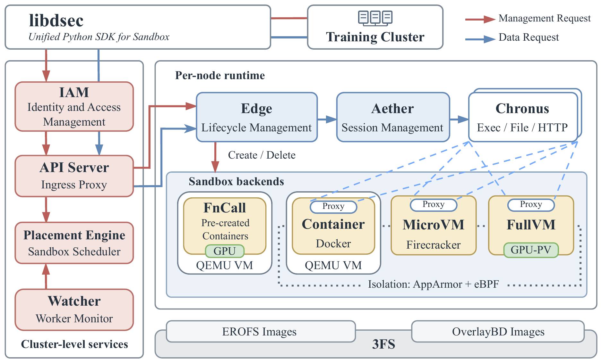</div>
        <figcaption>DSec 原图（Figure 1）：系统结构。容器与 VM 沙箱各配一个代理，负责沙箱与平台其余部分之间的通信；FnCall 走单独的执行路径。红线为管理请求，蓝线为数据请求。<button class="ref" data-r="deepseek-elastic-compute"></button></figcaption>
      </figure>
      <figure class="figure" id="fig-dsec-mech">
        <div class="frame photo">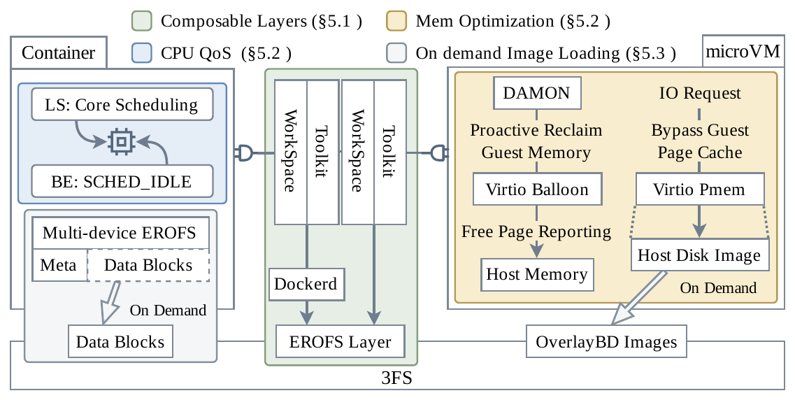</div>
        <figcaption>DSec 原图（Figure 9）：核心机制。LS 为延迟敏感任务，BE 为尽力而为任务。容器侧用 core scheduling 与 SCHED_IDLE 隔离 CPU，用多设备 EROFS 按需读取数据块；workspace 与 toolkit 作为可组合层挂载；microVM 侧用 DAMON、virtio balloon 回收客户机内存，用 virtio-pmem 绕过客户机页缓存。<button class="ref" data-r="deepseek-elastic-compute"></button></figcaption>
      </figure>
    </div>
  </div>
  <div class="cols">
    <div class="prose">
      <h3>RollArt：按硬件拆分流水线</h3>
      <p>RollArt（OSDI 2026）把 agentic RL 的各阶段放到最适合的硬件上：prefill 为主的任务用计算型 GPU，decode 为主的任务用带宽型 GPU，环境运行在 CPU 集群，无状态的奖励计算放到 serverless 平台（<span class="xref" data-x="fig-rollart"></span>）。rollout 按轨迹解耦，生成、环境交互与评分各自推进，慢的或出错的环境不会阻塞其他轨迹；训练与 rollout 在有界陈旧度下异步同步权重。论文统计的多任务训练步，正常运行时平均 365.7 秒，环境出现故障时平均 513.3 秒。与多种 RL 系统相比，训练时间缩短 1.31–2.05 倍；奖励计算移到 serverless 后，奖励 GPU 的利用率由 6% 升至 88%，每步 rollout 时间减半。<button class="ref" data-r="rollart"></button></p>
      <h3>rollout 的长尾</h3>
      <p>Seer 观察到同一提示的多个请求在输出长度和模式上相近，RhymeRL 观察到相邻训练轮次的 rollout 相近，两者把这些相似性用于负载均衡和推测解码。DynaRL 用动态超图描述 RL 流水线，把 GPU 从过度配置的组件迁移到当前的瓶颈。RLinf 把高层工作流拆分后重组为执行流。HetRL 在异构 GPU 上求解调度问题。<button class="ref" data-r="seer"></button><button class="ref" data-r="rhymerl"></button><button class="ref" data-r="dynarl"></button><button class="ref" data-r="rlinf"></button><button class="ref" data-r="hetrl"></button></p>
    </div>
    <div class="stack">
      <figure class="figure" id="fig-rollart">
        <div class="frame photo narrow"></div>
        <figcaption>RollArt 原图（Figure 7）：系统结构。Environment Cluster 运行在 CPU 节点上，经 LLM Proxy 取得动作；ActorGen（vLLM/SGLang）、Reward（FC，即函数计算）与 ActorTrain（Megatron）分别部署在 H20、serverless 与 H800 资源上；完成的轨迹进入 Sample Buffer 供训练使用。取自 OSDI 发表版 PDF 第 7 页。<button class="ref" data-r="rollart"></button></figcaption>
      </figure>
      <div class="figure">
        <div class="chart-title">RL 系统论文报告的最大加速比（倍）</div>
        <div id="ch-rl"></div>
        <figcaption>各论文的指标与对比基线不同：Seer 为 rollout 吞吐，DynaRL 为端到端吞吐，RLinf 为训练吞吐，RollArt 为训练时间，RhymeRL 为整体性能，HetRL 为异构环境下的吞吐。<button class="ref" data-r="seer"></button><button class="ref" data-r="dynarl"></button><button class="ref" data-r="rlinf"></button><button class="ref" data-r="rollart"></button><button class="ref" data-r="rhymerl"></button><button class="ref" data-r="hetrl"></button></figcaption>
      </div>
    </div>
  </div>
</section>

<!-- ============ 参考文献 ============ -->
<section class="page" data-id="sources" data-title="参考文献">
  <div class="kicker"><span>索引</span><span>参考文献</span></div>
  <h2>参考文献</h2>
  <p class="lede">正文中的上标编号对应下列条目，按首次引用的先后排列。每条附原文链接、本仓库存档的 PDF 与提取全文；arXiv 论文另附源码包，文中的论文原图取自其中。存档但未在正文引用的资料列在最后。</p>
  <div class="src-tools">
    <label for="src-q" class="note">筛选</label>
    <input id="src-q" type="search" placeholder="输入厂商、产品或论文标题">
    <span class="note" id="src-count"></span>
  </div>
  <div class="src-list" id="src-list"></div>
</section>

<div class="pager-foot" id="pager-foot">
  <button id="foot-prev"></button>
  <button id="foot-next"></button>
</div>
</main>

<script src="sources.js"></script>
<script src="logos.js"></script>
<script src="app.js"></script>
